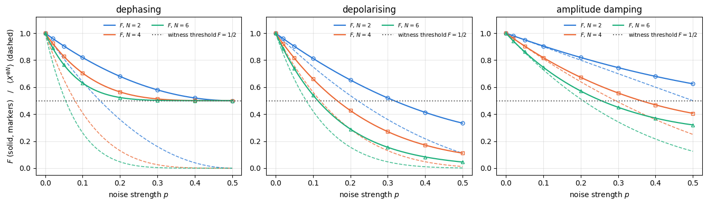
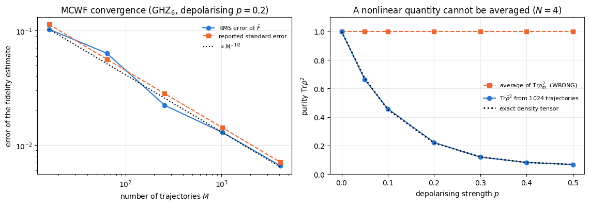
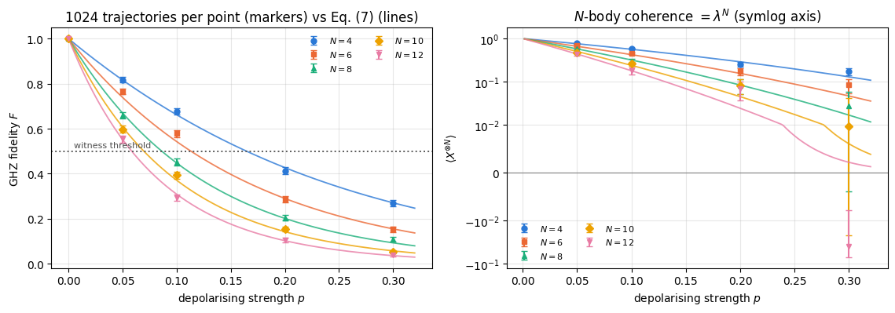
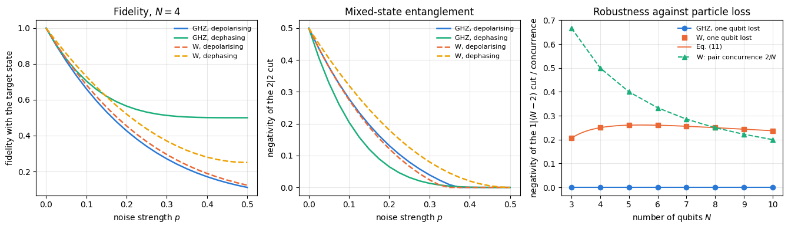

Every experiment on this state faces two questions: how to prove from measured counts that a device really produced it, and how fast noise acting on each qubit destroys it. The state is the simplest one that is genuinely\(N\)-partite entangled — no division of the qubits into two groups makes it a product state — and simultaneously the most fragile. Every qubit is perfectly correlated with every other one, yet no pair of qubits shares any entanglement at all; the whole resource lives in a single coherence, the density-matrix element between \(\vert0\cdots0\rangle\) and \(\vert1\cdots1\rangle\), two basis states as far apart as two basis states can be. That is what makes it a standard benchmark of quantum platforms: preparing \(\vert\mathrm{GHZ}_N\rangle\) and proving that you have it tests the coherence of the whole register at once. Ion traps reached \(N=4\) (Sackett and co-workers, 2000), \(N=6\) (Leibfried and co-workers, 2005) and \(N=14\) (Monz and co-workers, 2011); superconducting and neutral-atom processors have since pushed further. The ion-trap experiments characterise the state through the quantities we compute here: the two extreme populations (the probabilities of reading all zeros and all ones), the parity oscillation, the product of all \(N\) outcomes measured along \(x\), which reveals the coherence, and the fidelity with the target state built from the two.
The state also has a place in the foundations of quantum mechanics. Greenberger, Horne and Zeilinger showed in 1989, for four spin-\(\tfrac12\) particles, that the conflict with local hidden variables becomes an all-or-nothing contradiction, and Mermin (Physics Today, 1990) reduced the argument to three: where CHSH is a statistical inequality, here a single sign is predicted wrongly with certainty by every local-realistic model. We derive that contradiction in Section 5 from the stabilisers, the operators that leave the state unchanged; it takes three lines once the algebra is set up.
And it is the workhorse of quantum metrology: the phase accumulated by \(\vert\mathrm{GHZ}_N\rangle\) is \(N\) times faster than that of a single qubit, which is the origin of the Heisenberg limit, the best precision scaling quantum mechanics allows (32 — GHZ interferometry, Chapter 10). The very same \(N\)-fold enhancement makes it decay \(N\) times faster under dephasing, the random phase noise of each qubit. The tension between those two statements — the best sensor is the most fragile state — is the subject of the second half of this notebook.
Road map.
Define the state, prepare it two ways — the textbook \(H\) + \(\mathrm{CNOT}\) cascade of depth \(N-1\), and a log-depth tree of depth \(\lceil\log_2N\rceil\) — and check that they agree (Sections 3–4).
Certify it: the \(N\)stabiliser generators\(Z_qZ_{q+1}\) and \(X^{\otimes N}\), all pairwise correlators, and the Greenberger–Horne–Zeilinger sign (Section 5).
Show the paradox: every pair has \(\langle Z_iZ_j\rangle=1\), and yet every two-qubit reduced state is a separable classical mixture (a mixture of product states); tracing out a single qubit leaves a state with zero entanglement across every cut (Sections 6–7).
Measure the \(N\)-body coherence the way experiments do: parity oscillations\(\langle X^{\otimes N}\rangle(\varphi)=\cos(N\varphi)\) after a collective \(R_z(\varphi)\), and combine them with populations into the fidelity witness: \(F>1/2\) certifies genuine \(N\)-partite entanglement (Sections 8–9).
Decoherence. Derive closed formulas for the coherence, for \(\langle Z_1Z_2\rangle\) and for the fidelity under local dephasing, depolarising and amplitude damping; verify them on the exact density tensor for \(N\le6\); then unravel the same channels into quantum trajectories (notebook 17), check the \(1/\sqrt M\) convergence with error bars, and use them to reach \(N=12\), where a density tensor would need \(2^{24}\) complex numbers (Sections 10–14).
Quantify the fragility: the noise level at which the witness stops working shrinks roughly like \(1/N\) (Section 15).
Compare with the W state, a single excitation shared by all qubits, which is entangled in a completely different way: part of its entanglement survives the loss of a qubit, while that of GHZ is destroyed completely (Section 16).
What you will learn
Physics
what “genuinely \(N\)-partite” entanglement means, and why \(\langle Z_iZ_j\rangle=1\) for all pairs carries no evidence of it;
stabiliser formalism in its smallest useful instance: \(N\) commuting operators that determine a state uniquely;
\(N\)-body coherence, parity oscillations, and why their frequency is the resource that metrology exploits;
entanglement witnesses: a sufficient certificate that is cheap to measure, and what it does and does not prove;
how the three standard single-qubit channels attack a GHZ state, and why the damage grows with \(N\);
the two inequivalent classes of tripartite entanglement (GHZ and W) and their opposite behaviour under particle loss.
Numerical methods
exact open-system dynamics on a density tensor (\(O(4^N)\)) versus Monte-Carlo wave-function trajectories (\(O(2^N)\) per trajectory), and when each is the right tool;
which observables can be estimated from trajectories (linear ones) and which cannot (negativity, entropies);
statistical error bars, \(1/\sqrt M\) convergence, and how to check a stochastic estimator against an exact reference;
bisection for a threshold, and fitting a power law on a log-log plot.
Implementation practice
vmap over trajectories and over parameter grids; one compiled program, thousands of independent stochastic runs;
a circuit as a Python loop of einsums, and how the loop structure encodes circuit depth;
building a channel from Kraus operators and applying it to a density tensor with a single einsum over the Kraus index;
the discipline of deriving a formula first and only then measuring it — every analytic result below is checked against the simulator, and every simulated number against the formula.
Conventions. Qubit \(q\) = tensor axis \(q\), counted from \(0\); \(\vert0\rangle\) is the \(+1\) eigenstate of \(Z\); Pauli strings are written with qubit \(0\) leftmost. We abbreviate \(\vert\bar0\rangle=\vert0\cdots0\rangle\) and \(\vert\bar1\rangle=\vert1\cdots1\rangle\).
Configuration
Every notebook of this course starts with the same cell. Choose where to run (DEVICE) and the floating-point precision (PRECISION): "double" = float64/complex128 (default, recommended for physics), "single" = float32/complex64 (half the memory, faster on consumer GPUs, but watch the round-off). All code below derives its dtypes from RDTYPE/CDTYPE and its check tolerances from TOL, so nothing else needs to change.
Code
# ==============================================================================# CONFIGURATION -- adapt to your hardware, then run the notebook top to bottom# ==============================================================================DEVICE ="auto"# "auto": use a GPU if JAX finds one, else CPU | "cpu" | "gpu"PRECISION ="double"# "double": float64/complex128 | "single": float32/complex64import osif DEVICE =="cpu": os.environ["JAX_PLATFORMS"] ="cpu"# must be set BEFORE jax is importedimport stringfrom functools import partialimport mathimport numpy as npimport jaximport jax.numpy as jnpfrom jax import lax# Precision is configurable: "double" = float64/complex128 (default; needed for long time evolutions and# tight validation), "single" = float32/complex64 (half the memory, faster on consumer GPUs).# In a notebook PRECISION is defined in the Configuration cell; for this module use the env var QE_PRECISION.PRECISION =globals().get("PRECISION", os.environ.get("QE_PRECISION", "double"))jax.config.update("jax_enable_x64", PRECISION =="double")RDTYPE = jnp.float64 if PRECISION =="double"else jnp.float32 # real dtypeCDTYPE = jnp.complex128 if PRECISION =="double"else jnp.complex64 # complex dtype of all states/operatorsTOL =1e-10if PRECISION =="double"else1e-4# tolerance for sanity checks (asserts)_LETTERS = string.ascii_letters # the 52 einsum index labels a-z, A-Zimport timeimport matplotlib.pyplot as pltif DEVICE =="gpu"and jax.default_backend() =="cpu":print("WARNING: DEVICE='gpu' requested but JAX found no GPU -- running on CPU.")print(f"JAX {jax.__version__} | backend: {jax.default_backend()} | devices: {jax.devices()}")print(f"precision: {PRECISION} -> real {RDTYPE.__name__}, complex {CDTYPE.__name__}, check tolerance TOL={TOL:g}")
JAX 0.11.0 | backend: cpu | devices: [CpuDevice(id=0)]
precision: double -> real float64, complex complex128, check tolerance TOL=1e-10
2. Engine recap and helpers
We use the einsum primitives for state vectors and density tensors, the standard Kraus channels, the trajectory sampler apply_kraus_mcwf, and the negativity. Everything specific to GHZ states is written from scratch below.
Engine recap — the simulator primitives used in this notebook (click to expand)
# ==============================================================================# ENGINE RECAP: the functions of quantum_engine.py (SmoQ.jax) used in this notebook.# Each one is derived, with its mathematics and an independent check, in notebook 08b# (Chapter 3), 'Building the quantum simulator engine'.# States are rank-N tensors of shape (2,)*N; every operator acts through ONE einsum.# ==============================================================================# ----------------------------------------------------------------------------# 1. Elementary matrices: Paulis, Clifford generators, rotations# ----------------------------------------------------------------------------I2 = jnp.eye(2, dtype=CDTYPE)X = jnp.array([[0, 1], [1, 0]], dtype=CDTYPE)Y = jnp.array([[0, -1j], [1j, 0]], dtype=CDTYPE)Z = jnp.array([[1, 0], [0, -1]], dtype=CDTYPE)H = jnp.array([[1, 1], [1, -1]], dtype=CDTYPE) / jnp.sqrt(2.0) # Hadamard: Z-basis <-> X-basisPAULI = {"I": I2, "X": X, "Y": Y, "Z": Z}CNOT = jnp.array([[1, 0, 0, 0], [0, 1, 0, 0], [0, 0, 0, 1], [0, 0, 1, 0]], dtype=CDTYPE)def rz(theta):"""Rotation about z: Rz(theta) = exp(-i theta Z/2) = diag(e^{-i theta/2}, e^{+i theta/2}).""" e = jnp.exp(-0.5j* theta)return jnp.array([[e, 0], [0, jnp.conj(e)]], dtype=CDTYPE)# ----------------------------------------------------------------------------# 2. THE core primitive: a k-qubit operator acting on a tensor through ONE einsum# ----------------------------------------------------------------------------def apply_gate(psi, U, qubits):"""Apply a k-qubit operator U to the axes `qubits` of the tensor `psi`. MATH ---- One qubit (k=1), target q: psi'[s_0,..,a,..,s_{N-1}] = sum_b U[a,b] psi[s_0,..,b,..,s_{N-1}] Two qubits (k=2), targets (q1,q2); the 4x4 matrix is reshaped to U[a1,a2,b1,b2]: psi'[.., a1, .., a2, ..] = sum_{b1,b2} U[a1,a2,b1,b2] psi[.., b1, .., b2, ..] This IS the action of (1 x .. x U x .. x 1) -- written without ever building it. EINSUM TRANSLATION (generated automatically below) ------------------ N=3, q=1 : "db,abc->adc" d = new (output) index of qubit 1 N=4, q=(1,3) : "efbd,abcd->aecf" e,f = new indices of qubits 1 and 3 Recipe: label the axes of psi with letters a,b,c,...; give every target qubit a NEW letter (the next unused ones); U carries (new letters)+(old letters of the targets); the output is psi's labels with the target letters replaced by the new ones. IMPLEMENTATION NOTES -------------------- * reshape of U: (2^k,2^k) -> (2,)*2k. Row index = (a1..ak), column = (b1..bk), and the FIRST qubit in `qubits` is the most significant bit of the small matrix, i.e. it corresponds to the LEFT factor of kron(A,B). * `qubits` may be any distinct axes in any order: non-neighbouring gates cost the same. * U need not be unitary: projectors, Kraus operators and Hamiltonian terms reuse this. * psi may be ANY tensor with those axes of size 2: a state (rank N), a density tensor (rank 2N: ket axes 0..N-1, bra axes N..2N-1), ... COST O(2^k * 2^N) operations, O(2^N) memory (dense matrix: O(4^N) both). JAX `qubits` must be static Python ints (they define the einsum string); psi and U are traced, so the function can sit inside jit / grad / vmap / scan. """ qubits =tuple(int(q) for q in qubits) k, n =len(qubits), psi.ndim U = jnp.asarray(U, dtype=psi.dtype).reshape((2,) * (2* k)) # matrix -> rank-2k tensor inp =list(_LETTERS[:n]) # labels of psi's axes new = _LETTERS[n:n + k] # fresh labels for the outputs out = inp.copy()for a, q inzip(new, qubits): out[q] = a # target axes get the new labels sub =f"{''.join(new)}{''.join(inp[q] for q in qubits)},{''.join(inp)}->{''.join(out)}"return jnp.einsum(sub, U, psi)def apply_gate_dm(rho, U, qubits):"""Unitary on a density tensor: rho -> U rho U^dagger. MATH rho'[a..;a'..] = sum_{b,b'} U[a,b] rho[b..;b'..] U^*[a',b'] i.e. U acts on the KET axis q and the complex conjugate U^* on the BRA axis N+q. (A density matrix is "a state vector of 2N qubits": vectorisation |rho>> and U (x) U^* acting on it.) IMPLEMENTATION two calls of `apply_gate` -- the same einsum machinery, no new code. COST O(2^k 4^N). """ N = rho.ndim //2 rho = apply_gate(rho, U, qubits) # U on ket axesreturn apply_gate(rho, jnp.conj(jnp.asarray(U)), [N + q for q in qubits]) # U^* on bra axesdef apply_kraus_dm(rho, kraus, qubits):"""Quantum channel in Kraus form: rho -> sum_m K_m rho K_m^dagger, sum_m K_m^dag K_m = 1. EINSUM TRANSLATION (N=2, channel on qubit 0; g = Kraus index, summed!) "gea,gfc,abcd->ebfd" with operands K, K^*, rho [a=ket0, b=ket1, c=bra0, d=bra1; e, f = new ket0, bra0] All Kraus branches are summed INSIDE one einsum -- no Python loop over m. `kraus` has shape (M, 2^k, 2^k). """ qubits =tuple(int(q) for q in qubits) k, N =len(qubits), rho.ndim //2 K = jnp.asarray(kraus, dtype=rho.dtype).reshape((-1,) + (2,) * (2* k)) n = rho.ndim inp =list(_LETTERS[:n]) new_k, new_b, m = _LETTERS[n:n + k], _LETTERS[n + k:n +2* k], _LETTERS[n +2* k] out = inp.copy()for a, b, q inzip(new_k, new_b, qubits): out[q], out[N + q] = a, b ket_old ="".join(inp[q] for q in qubits) bra_old ="".join(inp[N + q] for q in qubits) sub =f"{m}{new_k}{ket_old},{m}{new_b}{bra_old},{''.join(inp)}->{''.join(out)}"return jnp.einsum(sub, K, jnp.conj(K), rho)# ----------------------------------------------------------------------------# 3. State preparation# ----------------------------------------------------------------------------def zero_state(N):"""|00...0>: a rank-N tensor of zeros with a single 1 at index (0,0,...,0). JAX arrays are immutable: `.at[idx].set(v)` returns an updated COPY (functional style)."""return jnp.zeros((2,) * N, dtype=CDTYPE).at[(0,) * N].set(1.0)_KETS = {"0": [1, 0], "1": [0, 1], "+": [1, 1], "-": [1, -1], "r": [1, 1j], "l": [1, -1j]}def product_state(spec):"""Product state from a string, one character per qubit: product_state('01+-') = |0>|1>|+>|->. ('r','l' = the +1/-1 eigenstates of Y.) MATH psi[s_0,...,s_{N-1}] = v0[s_0] v1[s_1] ... v_{N-1}[s_{N-1}] EINSUM an outer product = einsum with NO summed index: "a,b,c->abc". A product state needs only 2N numbers; entanglement is what makes all 2^N necessary. """ vecs = [jnp.array(_KETS[c], dtype=CDTYPE) / jnp.linalg.norm(jnp.array(_KETS[c], dtype=CDTYPE))for c in spec] n =len(vecs) sub =",".join(_LETTERS[i] for i inrange(n)) +"->"+ _LETTERS[:n]return jnp.einsum(sub, *vecs)def ghz_state(N):"""GHZ state (|0...0> + |1...1>)/sqrt(2): two non-zero entries of the rank-N tensor.""" psi = jnp.zeros((2,) * N, dtype=CDTYPE)return psi.at[(0,) * N].set(1/ jnp.sqrt(2.0)).at[(1,) * N].set(1/ jnp.sqrt(2.0))def dicke_state(N, k):"""Symmetric Dicke state |D_N^k>: equal superposition of all basis states with exactly k ones. Implementation: mask of the flat indices with popcount == k, normalised by sqrt(binom(N,k)).""" idx = np.arange(2** N) pop = np.array([bin(i).count("1") for i in idx]) v = (pop == k).astype(np.complex128)return jnp.asarray(v / np.linalg.norm(v), dtype=CDTYPE).reshape((2,) * N)def w_state(N):"""W state = Dicke state with one excitation: (|10..0> + |01..0> + ... + |0..01>)/sqrt(N)."""return dicke_state(N, 1)def to_dm(psi):"""Pure state -> density TENSOR rho[s..; s'..] = psi[s..] psi^*[s'..] (rank 2N). An outer product: einsum "ab,AB->abAB" -- here via the equivalent tensordot(axes=0)."""return jnp.tensordot(psi, jnp.conj(psi), axes=0)def dm_matrix(rho):"""View a rank-2N density tensor as an ordinary 2^N x 2^N matrix (a reshape, no copy of meaning).""" d =int(round(np.sqrt(rho.size)))return rho.reshape(d, d)# ----------------------------------------------------------------------------# 4. Reduced density matrices & observables (matrix-free)# ----------------------------------------------------------------------------def rdm(psi, keep):"""Reduced density matrix of the qubits `keep` from a PURE state: rho_A = Tr_B |psi><psi|. MATH rho_A[a, a'] = sum_{b} psi[a, b] psi^*[a', b] (a: indices of A, b: of the rest B) EINSUM TRANSLATION N=3, keep=(0,): "abc,Abc->aA" with operands psi, psi^* * letters of B (b,c) appear in BOTH operands and not in the output -> summed = traced out * the kept axis gets a different letter in the second operand -> stays open (a and A) The full |psi><psi| (4^N numbers) is never formed; cost O(2^N 2^|A|). Returns a (2^|A|, 2^|A|) matrix with row/column order following `keep`. """ keep =tuple(int(q) for q in keep) n, k = psi.ndim, len(keep) a =list(_LETTERS[:n]) b = a.copy()for new, q inzip(_LETTERS[n:n + k], keep): b[q] = new sub =f"{''.join(a)},{''.join(b)}->{''.join(a[q] for q in keep)}{''.join(b[q] for q in keep)}"return jnp.einsum(sub, psi, jnp.conj(psi)).reshape(2** k, 2** k)def rdm_dm(rho, keep):"""Partial trace of a density TENSOR (rank 2N), keeping the qubits `keep`. MATH rho_A[a,a'] = sum_b rho[a,b ; a',b] EINSUM N=2, keep=(0,): "abAb->aA" -- the letter b is REPEATED inside one operand and absent from the output: that is a trace over that pair of axes. """ keep =tuple(int(q) for q in keep) N = rho.ndim //2 ket =list(_LETTERS[:N]) bra = [(_LETTERS[N + q] if q in keep else ket[q]) for q inrange(N)] sub =f"{''.join(ket)}{''.join(bra)}->{''.join(ket[q] for q in keep)}{''.join(bra[q] for q in keep)}"return jnp.einsum(sub, rho).reshape(2**len(keep), 2**len(keep))def apply_pauli_string(psi, ops):"""Apply a Pauli string P = P_0 x P_1 x ... to psi. `ops` is a dict {qubit: 'X'|'Y'|'Z'} or a string like 'XIZY' (one letter per qubit; 'I' skipped). N single-qubit einsums -- cost O(N 2^N) -- instead of one 2^N x 2^N matrix."""ifisinstance(ops, str): ops = {q: p for q, p inenumerate(ops) if p !="I"}for q, p in ops.items(): psi = apply_gate(psi, PAULI[p], [q])return psidef expect_pauli_string(psi, ops):"""<psi|P|psi> = <psi | (P psi)> : apply the string, then ONE inner product (jnp.vdot conjugates its first argument). Works for strings of any weight, e.g. the N-body correlator <X X ... X>."""return jnp.real(jnp.vdot(psi, apply_pauli_string(psi, ops)))def expect_pauli_string_dm(rho, ops):"""Tr(P rho): apply P to the KET axes only, then take the full trace."""return jnp.real(jnp.trace(dm_matrix(apply_pauli_string(rho, ops))))# ----------------------------------------------------------------------------# 5. State characteristics: entropies, fidelity, negativity# ----------------------------------------------------------------------------def purity(rho_mat):"""Tr(rho^2): 1 for pure states, 1/d for the maximally mixed state in dimension d."""return jnp.real(jnp.trace(rho_mat @ rho_mat))def von_neumann_entropy(rho_mat, base=2.0):"""S(rho) = -Tr(rho log rho) = -sum_i lambda_i log lambda_i (in bits for base=2). Eigenvalues are clipped at 1e-16 because 0*log(0) := 0 but log(0) = -inf numerically.""" lam = jnp.clip(jnp.linalg.eigvalsh(rho_mat), 1e-16, None)return-jnp.sum(lam * jnp.log(lam)) / jnp.log(base)def schmidt_values(psi, subsystem):"""Schmidt coefficients of the bipartition A|B with A = `subsystem`. MATH Group the tensor axes into a matrix M[(a),(b)] = psi[a,b] of shape (2^|A|, 2^|B|). Its SVD M = U diag(lambda) V^dag IS the Schmidt decomposition |psi> = sum_k lambda_k |u_k>_A |v_k>_B , rho_A has eigenvalues lambda_k^2. IMPLEMENTATION transpose (A axes first) -> reshape -> svd. No density matrix needed. """ A =tuple(int(q) for q in subsystem) B =tuple(q for q inrange(psi.ndim) if q notin A) M = jnp.transpose(psi, A + B).reshape(2**len(A), -1)return jnp.linalg.svd(M, compute_uv=False)def entanglement_entropy(psi, subsystem, base=2.0):"""Entanglement entropy S_A = -sum_k p_k log p_k with p_k = lambda_k^2 (squared Schmidt values). Product state: 0. Bell/GHZ across any cut: 1 bit. Random state: ~ |A| - 1/(2 ln2) 2^{|A|-|B|} (Page).""" p = jnp.clip(schmidt_values(psi, subsystem) **2, 1e-16, None)return-jnp.sum(p * jnp.log(p)) / jnp.log(base)def _sqrtm_psd(A):"""Square root of a positive semi-definite matrix via eigendecomposition: V sqrt(w) V^dag.""" w, v = jnp.linalg.eigh(A)return (v * jnp.sqrt(jnp.clip(w, 0, None))) @ v.conj().Tdef as_dm_tensor(rho):"""Accept a density matrix in EITHER form and return the rank-2N tensor (2,)*2N. Both conventions are in use: `rdm` and `dm_matrix` return a (2^N, 2^N) MATRIX, while `to_dm` and the channel functions work with the rank-2N TENSOR (N ket axes, then N bra axes). A (2^N, 2^N) matrix with N > 1 is unambiguous, because a density tensor has every axis of length 2. Passing the matrix form straight to `partial_transpose` used to transpose the WHOLE matrix, which leaves the eigenvalues alone and silently reports zero negativity -- hence this conversion. """ rho = jnp.asarray(rho)if rho.ndim ==2and rho.shape[0] >2: # (2^N, 2^N) matrix with N > 1 d = rho.shape[0] N =int(round(math.log2(d)))if2** N != d:raiseValueError(f"density matrix of dimension {d} is not a power of two")return rho.reshape((2,) * (2* N))ifany(s !=2for s in rho.shape) or rho.ndim %2:raiseValueError(f"not a density matrix or density tensor: shape {rho.shape}")return rhodef partial_transpose(rho, qubits):"""Partial transpose on subsystem A = `qubits`, for a density tensor OR a (2^N, 2^N) matrix. In tensor form it is trivial: SWAP the ket axis q with the bra axis N+q for q in A. (With a 2^N x 2^N matrix this requires painful index gymnastics -- here: one `transpose`.) RETURNS the rank-2N tensor; wrap in `dm_matrix` for the matrix form.""" rho = as_dm_tensor(rho) N = rho.ndim //2 perm =list(range(2* N))for q in qubits: perm[q], perm[N + q] = perm[N + q], perm[q]return jnp.transpose(rho, perm)def negativity(rho, qubits):"""Entanglement negativity (Peres-Horodecki / PPT criterion). N(rho) = (||rho^{T_A}||_1 - 1)/2 = sum of |negative eigenvalues| of the partial transpose, E_N = log2 ||rho^{T_A}||_1 = log2(2N+1) (logarithmic negativity). N > 0 => entangled (for 2x2 and 2x3 systems also <=). Returns (N, E_N).""" lam = jnp.linalg.eigvalsh(dm_matrix(partial_transpose(rho, qubits))) neg = jnp.sum(jnp.abs(lam) - lam) /2return neg, jnp.log2(2* neg +1)# ----------------------------------------------------------------------------# 7. Noise channels (Kraus operators): density matrix and quantum-trajectory forms# ----------------------------------------------------------------------------def kraus_depolarizing(p):"""Depolarising channel rho -> (1-p) rho + (p/3)(X rho X + Y rho Y + Z rho Z). Kraus: sqrt(1-p) 1, sqrt(p/3) X, sqrt(p/3) Y, sqrt(p/3) Z. Bloch vector shrinks by 1 - 4p/3."""return jnp.stack([jnp.sqrt(1- p) * I2, jnp.sqrt(p /3) * X, jnp.sqrt(p /3) * Y, jnp.sqrt(p /3) * Z])def kraus_dephasing(p):"""Dephasing (phase-flip) channel rho -> (1-p) rho + p Z rho Z : coherences rho_01 -> (1-2p) rho_01."""return jnp.stack([jnp.sqrt(1- p) * I2, jnp.sqrt(p) * Z])def kraus_amplitude_damping(g):"""Amplitude damping (T1 decay |1> -> |0> with probability g): K0 = [[1,0],[0,sqrt(1-g)]] (no decay -- but the amplitude of |1> shrinks: 'no click' is information) K1 = [[0,sqrt(g)],[0,0]] (decay event = sqrt(g) |0><1| = sqrt(g) sigma^+, engine SP).""" K0 = jnp.array([[1, 0], [0, jnp.sqrt(1- g)]], dtype=CDTYPE) K1 = jnp.array([[0, jnp.sqrt(g)], [0, 0]], dtype=CDTYPE)return jnp.stack([K0, K1])def apply_kraus_mcwf(key, psi, kraus, qubits):"""Apply a channel to a PURE state stochastically (quantum trajectory / Monte-Carlo wave function). MATH choose branch m with probability p_m = ||K_m psi||^2 = Tr(K_m rho_A K_m^dag) then |psi> -> K_m|psi> / sqrt(p_m). Averaging |psi><psi| over many trajectories gives exactly sum_m K_m rho K_m^dag. WHY memory O(2^N) instead of O(4^N): open systems at the price of closed ones (times #trajectories, which are embarrassingly parallel -> jax.vmap over keys). IMPLEMENTATION probabilities come from the SMALL reduced density matrix (einsum "mab,bc,mac->m"); `K[m]` with a traced integer m is a gather, so everything stays jit-compatible. """ K = jnp.asarray(kraus, dtype=CDTYPE) r = rdm(psi, qubits) probs = jnp.real(jnp.einsum("mab,bc,mac->m", K, r, jnp.conj(K))) m = jax.random.categorical(key, jnp.log(jnp.clip(probs, 1e-300, None))) psi = apply_gate(psi, K[m], qubits)return psi / jnp.linalg.norm(psi)
Code
# ==============================================================================# PLOT STYLE + small helpers used throughout this notebook# ==============================================================================import itertoolsPALETTE =["#2a78d6", "#eb6834", "#1baf7a", "#eda100", "#e87ba4", "#4a3aa7"] # colour-blind-friendly, fixed orderMARKERS = ["o", "s", "^", "D", "v", "P"]plt.rcParams.update({"axes.prop_cycle": plt.cycler(color=PALETTE), "axes.grid": True,"grid.alpha": 0.3, "font.size": 10, "legend.frameon": False})def max_abs(a):"""Largest absolute entry of an array, as a Python float."""returnfloat(jnp.max(jnp.abs(jnp.asarray(a))))def dm_tensor(mat, N):"""Inverse of `dm_matrix`: view a 2^N x 2^N matrix as a rank-2N density tensor (ket axes 0..N-1, bra axes N..2N-1)."""return jnp.asarray(mat, dtype=CDTYPE).reshape((2,) * (2* N))def concurrence(rho_mat):"""Wootters' concurrence of a TWO-qubit density matrix (Phys. Rev. Lett. 80, 2245 (1998)). MATH rho~ = (Y (x) Y) rho^* (Y (x) Y); lambda_i = sqrt(eigenvalues of rho rho~), sorted decreasingly; C = max(0, lambda_1 - lambda_2 - lambda_3 - lambda_4). C = 0 separable, C = 1 maximally entangled. IMPLEMENTATION use the Hermitian, similar matrix sqrt(rho) rho~ sqrt(rho) so that `eigvalsh` applies. """ YY_ = jnp.kron(Y, Y) rho_mat = jnp.asarray(rho_mat, dtype=CDTYPE) s = _sqrtm_psd(rho_mat) lam = jnp.sqrt(jnp.clip(jnp.linalg.eigvalsh(s @ (YY_ @ jnp.conj(rho_mat) @ YY_) @ s), 0.0, None))returnfloat(jnp.maximum(0.0, lam[3] - lam[2] - lam[1] - lam[0]))def neg_cut(rho_tensor, cut):"""Negativity of a density TENSOR across the bipartition (`cut` | rest)."""returnfloat(negativity(rho_tensor, list(cut))[0])
As a rank-\(N\) tensor of shape \((2,\dots,2)\) it has exactly two non-zero entries out of \(2^N\), both equal to \(1/\sqrt2\): psi[0,0,...,0] = psi[1,1,...,1] = 1/sqrt(2). Two numbers specify it completely; Sections 10–15 show how quickly local noise destroys it.
3.2 Schmidt decomposition across an arbitrary cut
For \(N=2\) it is a Bell state, \(\vert\Phi^+\rangle\). For \(N\ge3\) something new happens. Split the qubits into any two groups \(A\) and \(B\); the Schmidt decomposition across that cut reads
with Schmidt coefficients \((1/\sqrt2,1/\sqrt2)\) — so every bipartition carries exactly \(1\) bit of entanglement entropy, no matter how the qubits are split. That is already unusual: a random state of \(N\) qubits has entropy close to \(\min(\vert A\vert,\vert B\vert)\) bits. Across a single-qubit cut one bit is the maximum possible, so the GHZ state is maximally entangled there; across a balanced cut of \(N=10\) qubits the maximum is five bits and the GHZ state still delivers only one, the most that Schmidt rank \(2\) allows. The same number is maximal at one end and small at the other, the first hint that the entanglement of this state is a property of the whole register and cannot be described cut by cut.
The next cell builds the state and checks this.
Code
# ==============================================================================# STEP 1: the GHZ tensor and the entanglement entropy of every bipartition# ==============================================================================N_DEMO =5ghz5 = ghz_state(N_DEMO)nz = np.argwhere(np.abs(np.asarray(ghz5)) >1e-12)print(f"GHZ_{N_DEMO} has {nz.shape[0]} non-zero amplitudes out of 2^{N_DEMO} = {2** N_DEMO}:")for idx in nz:print(f" psi[{','.join(map(str, idx))}] = {complex(ghz5[tuple(idx)]).real:.6f}")print(f"\n{'subsystem A':>22s}{'S_A [bits]':>12s}")errS =0.0for k inrange(1, N_DEMO):for A in itertools.combinations(range(N_DEMO), k): S =float(entanglement_entropy(ghz5, A)) errS =max(errS, abs(S -1.0))if k <=2or A ==tuple(range(k)):print(f"{str(A):>22s}{S:12.9f}")print(f"\nlargest deviation of S_A from 1 bit over ALL {2** N_DEMO -2} bipartitions: {errS:.2e}")assert errS <1e-9
GHZ_5 has 2 non-zero amplitudes out of 2^5 = 32:
psi[0,0,0,0,0] = 0.707107
psi[1,1,1,1,1] = 0.707107
subsystem A S_A [bits]
(0, 1, 2, 3) 1.000000000
largest deviation of S_A from 1 bit over ALL 30 bipartitions: 1.07e-14
Two non-zero amplitudes, and every one of the \(2^5-2=30\) bipartitions carries exactly one bit of entanglement entropy. The state is “flat”: it does not care how you cut it.
Physics insight. One bit per cut sounds modest, and for a bipartite purpose it is. What is special is that the same one bit is shared by all the qubits at once and cannot be attributed to any subset — which is exactly what Sections 6 and 7 will make quantitative.
4. Two ways to prepare it: the cascade and the tree
4.1 The textbook cascade
Start from \(\vert\bar0\rangle\), put qubit \(0\) into \(\vert+\rangle\) with a Hadamard, and then copy that bit along the chain with \(\mathrm{CNOT}\)s:
Each \(\mathrm{CNOT}\) extends the correlated block by one qubit, because \(\mathrm{CNOT}\) acting on \(\vert x\rangle\vert0\rangle\) gives \(\vert x\rangle\vert x\rangle\) and the map is linear, so the two branches of the superposition are copied independently. (The no-cloning theorem is respected: the \(\mathrm{CNOT}\) copies the basis states \(\vert0\rangle\) and \(\vert1\rangle\), and no unknown superposition is duplicated; see the no-cloning discussion in 20 — quantum teleportation.)
Cost: \(1\) Hadamard and \(N-1\)\(\mathrm{CNOT}\)s. But every \(\mathrm{CNOT}\) waits for the previous one, so the circuit depth is \(N-1\) two-qubit layers. On hardware with a fixed gate time and a fixed coherence time, the depth sets how long the register is exposed to noise before the state is complete.
4.2 The log-depth tree
The same \(N-1\)\(\mathrm{CNOT}\)s can be arranged so that many of them run in parallel. After the Hadamard, qubit \(0\) carries the superposition; one \(\mathrm{CNOT}\) makes two qubits carry it; those two can then, simultaneously, seed two more; and so on — the correlated block doubles every layer:
layer
\(\mathrm{CNOT}\)s (control \(\to\) target)
qubits correlated afterwards
1
\(0\to1\)
2
2
\(0\to2\), \(1\to3\)
4
3
\(0\to4\), \(1\to5\), \(2\to6\), \(3\to7\)
8
\(d\)
\(q\to q+2^{d-1}\) for \(q<\min(2^{d-1},N-2^{d-1})\)
\(\min(2^{d},N)\)
The number of gates is unchanged, \(N-1\)\(\mathrm{CNOT}\)s, and no circuit of two-qubit gates can use fewer: the GHZ state is entangled across every cut, so the graph whose edges are the gates must connect all \(N\) qubits, and a connected graph on \(N\) vertices has at least \(N-1\) edges. The depth drops to \(\lceil\log_2N\rceil\). For \(N=14\) that is \(4\) layers instead of \(13\); for \(N=64\), \(6\) instead of \(63\). The price is connectivity: the tree needs \(\mathrm{CNOT}\)s between distant qubits, which a nearest-neighbour chain does not provide. This is the classic depth-versus-connectivity trade-off of circuit design.
In our simulator the two circuits cost exactly the same, because apply_gate addresses arbitrary tensor axes and a “distant” gate is no more expensive than a neighbouring one. What the code makes visible is the structure: the cascade is a for loop of length \(N-1\), the tree is a doubling loop of length \(\lceil\log_2N\rceil\) whose body is itself a loop.
Code
# ==============================================================================# STEP 2: two GHZ preparation circuits -- cascade (depth N-1) and tree (depth ceil(log2 N))# ==============================================================================def ghz_cascade(N):"""H on qubit 0, then CNOT(q-1 -> q) for q = 1..N-1. Gates: 1 + (N-1). Two-qubit depth: N-1.""" psi = apply_gate(zero_state(N), H, [0])for q inrange(1, N): psi = apply_gate(psi, CNOT, [q -1, q])return psidef ghz_tree_layers(N):"""The CNOT layers of the log-depth tree: layer d contains (q, q + span) for q < span, span = 2^{d-1}. MATH after d layers the qubits 0..2^d-1 (capped at N) all carry the same bit as qubit 0, so ceil(log2 N) layers suffice. Total CNOTs: N-1, as in the cascade. """ layers, span = [], 1while span < N: layers.append([(q, q + span) for q inrange(min(span, N - span))]) span *=2return layersdef ghz_tree(N):"""Same GHZ state as `ghz_cascade`, prepared with ceil(log2 N) layers of parallel CNOTs.""" psi = apply_gate(zero_state(N), H, [0])for layer in ghz_tree_layers(N):for (c, t) in layer: psi = apply_gate(psi, CNOT, [c, t])return psi# --- CHECKPOINT: both circuits give the reference state; count gates and depth -----------------------print(f"{'N':>3s}{'CNOTs cascade':>14s}{'depth cascade':>14s}{'CNOTs tree':>11s}{'depth tree':>11s} "f"{'ceil(log2 N)':>13s}{'|cascade-ref|':>14s}{'|tree-ref|':>12s}")for N in (2, 3, 4, 5, 6, 8, 10, 12, 14): layers = ghz_tree_layers(N) n_cnot_tree =sum(len(l) for l in layers) e_c = max_abs(ghz_cascade(N) - ghz_state(N)) e_t = max_abs(ghz_tree(N) - ghz_state(N))print(f"{N:3d}{N -1:14d}{N -1:14d}{n_cnot_tree:11d}{len(layers):11d} "f"{int(np.ceil(np.log2(N))):13d}{e_c:14.2e}{e_t:12.2e}")assert e_c <1e3* TOL and e_t <1e3* TOL and n_cnot_tree == N -1assertlen(layers) ==int(np.ceil(np.log2(N)))
N CNOTs cascade depth cascade CNOTs tree depth tree ceil(log2 N) |cascade-ref| |tree-ref|
2 1 1 1 1 1 0.00e+00 0.00e+00
3 2 2 2 2 2 0.00e+00 0.00e+00
4 3 3 3 2 2 0.00e+00 0.00e+00
5 4 4 4 3 3 0.00e+00 0.00e+00
6 5 5 5 3 3 0.00e+00 0.00e+00
8 7 7 7 3 3 0.00e+00 0.00e+00
10 9 9 9 4 4 0.00e+00 0.00e+00
12 11 11 11 4 4 0.00e+00 0.00e+00
14 13 13 13 4 4 0.00e+00 0.00e+00
Both circuits reproduce the reference state to machine precision and both use exactly \(N-1\)\(\mathrm{CNOT}\)s, but the tree needs \(\lceil\log_2N\rceil\) layers where the cascade needs \(N-1\): at \(N=14\), \(4\) layers against \(13\) during which the register is exposed to noise. In Sections 10–15 the noise acts after an ideal preparation. Exercise 4 puts it inside the two circuits: with depolarising noise on every qubit after every layer, the tree’s infidelity is smaller by close to the ratio of the layer counts at weak noise (\(5/3\) at \(N=6\), about \(7/3\) at \(N=8\)), and the advantage shrinks as the noise grows.
Numerical practice. Two independent constructions of the same object are the cheapest checkpoint there is. Here the “independent references” are (i) the analytically constructed tensor ghz_state, (ii) a depth-\((N-1)\) circuit and (iii) a depth-\(\lceil\log_2N\rceil\) circuit. The two circuits fail in different ways: the cascade acts only on adjacent axis pairs \((q-1,q)\), the tree on distant ones, so a bug in apply_gate that mishandled non-adjacent target axes — a wrong einsum label order, say — would leave the cascade intact and break the tree. A swapped \(\mathrm{CNOT}\) control and target, by contrast, is caught by both (in either circuit the control qubit would be \(\vert0\rangle\) and every gate would act as the identity).
5. Certifying the state: stabilisers
5.1 \(N\) operators that pin down one state
A state can be specified by listing \(2^N\) amplitudes, or — much more economically — by listing operators that leave it invariant. For the GHZ state, consider
Each of them has eigenvalue \(+1\) on \(\vert\mathrm{GHZ}_N\rangle\):
\(Z_qZ_{q+1}\vert\bar0\rangle=(+1)(+1)\vert\bar0\rangle=\vert\bar0\rangle\) and \(Z_qZ_{q+1}\vert\bar1\rangle=(-1)(-1)\vert\bar1\rangle=\vert\bar1\rangle\); the two branches get the same sign, so the superposition is invariant. (This is where the pairwise nature comes from: a single \(Z_q\) would give \(+1\) and \(-1\), mapping the GHZ state to the orthogonal combination.)
\(X^{\otimes N}\) flips every qubit: \(\vert\bar0\rangle\leftrightarrow\vert\bar1\rangle\), and the symmetric superposition is invariant.
These \(N\) operators commute (each pair overlaps in an even number of anticommuting factors: \(Z_qZ_{q+1}\) and \(X^{\otimes N}\) share two sites, and \((-1)^2=+1\)), they are independent, and \(N\) independent commuting \(\pm1\) observables cut the \(2^N\)-dimensional space down to \(2^N/2^N=1\) dimension. The list of \(N\) operators therefore determines the state uniquely. That is the stabiliser formalism in miniature, and it is why GHZ states are so convenient for both theory (Gottesman–Knill, notebook 27 — stabilizer Renyi entropy) and experiment: checking \(N\) expectation values is much cheaper than full tomography’s \(4^N-1\) parameters.
5.2 The Greenberger–Horne–Zeilinger sign
Here is a three-line consequence for \(N=3\), the three-particle form of the argument given by Mermin in Physics Today (1990). Using \(Y=iXZ\), i.e. \(Y_1Y_2=-X_1X_2Z_1Z_2\),
\[X_0Y_1Y_2=-\,X_0X_1X_2\,Z_1Z_2 .\]
The product \(X_0X_1X_2\,Z_1Z_2\) is itself an element of the stabiliser group of Section 5.1 (a generator times a generator), so it has the definite value \(+1\) on \(\vert\mathrm{GHZ}_3\rangle\) and \(\langle X_0Y_1Y_2\rangle=-1\). By the symmetry of the state under permuting the qubits, \(\langle Y_0X_1Y_2\rangle=\langle Y_0Y_1X_2\rangle=-1\) as well, while \(\langle X_0X_1X_2\rangle=+1\). All four operators are products of \(\pm1\)-valued single-qubit observables, and each of the four is measured in one run by measuring each qubit in the \(X\) or the \(Y\) basis.
Now suppose each qubit carried pre-existing values \(x_q,y_q\in\{\pm1\}\) — the outcomes that the \(X\) and the \(Y\) measurement would reveal. Two assumptions are packed into that sentence. Realism: the values exist before the measurement, whether or not it is performed. Locality: the value \(x_0\) is one number, not four — it does not depend on whether qubits \(1\) and \(2\) are measured along \(X\) or along \(Y\), because those measurements can be made at spacelike separation. Without locality the four settings would carry four unrelated triples of values and nothing could be concluded.
The first three correlators demand \(x_0y_1y_2=y_0x_1y_2=y_0y_1x_2=-1\); multiplying them and using \(y_q^2=1\) gives \(x_0x_1x_2=(-1)^3=-1\). The fourth demands \(x_0x_1x_2=+1\). No assignment of values exists, for any state of the hidden variables: the contradiction is between the definite values \(+1\) and \(-1\). In contrast to CHSH, no statistics are needed for an ideal state, and one run of each of the four settings already exhibits it. We verify the four signs numerically below; the statistical cousin of this argument is developed in 19 — Bell states and CHSH and its many-body version in 26 — many-body Bell correlators.
Code
# ==============================================================================# STEP 3: stabiliser generators, the full stabiliser group, and the GHZ sign# ==============================================================================def stabilizer_generators(N):"""The N generators of the GHZ stabiliser group as Pauli strings: Z_q Z_{q+1} (q < N-1) and X...X.""" gens = []for q inrange(N -1): s = ["I"] * N s[q] = s[q +1] ="Z" gens.append("".join(s)) gens.append("X"* N)return gensN_ST =4psi_st = ghz_state(N_ST)print(f"stabiliser generators of GHZ_{N_ST} and their expectation values:")err_st =0.0for g in stabilizer_generators(N_ST): v =float(expect_pauli_string(psi_st, g)) err_st =max(err_st, abs(v -1.0))print(f" <{g}> = {v:+.12f}")print(f"\nmax |<g> - 1| = {err_st:.2e} ({N_ST} independent commuting generators fix 1 state out of 2^{N_ST})")assert err_st <1e3* TOL# --- the Greenberger-Horne-Zeilinger all-or-nothing signs (N = 3) ------------------------------------psi3 = ghz_state(3)ghz_signs = {s: float(expect_pauli_string(psi3, s)) for s in ("XXX", "XYY", "YXY", "YYX")}print("\nGHZ_3 correlators: "+" ".join(f"<{k}> = {v:+.6f}"for k, v in ghz_signs.items()))print(f"product of the three Y-type correlators = {ghz_signs['XYY'] * ghz_signs['YXY'] * ghz_signs['YYX']:+.6f}"f" -> local realism would force <XXX> = -1, quantum mechanics gives {ghz_signs['XXX']:+.6f}")assertabs(ghz_signs["XXX"] -1) <1e3* TOLassertall(abs(ghz_signs[k] +1) <1e3* TOL for k in ("XYY", "YXY", "YYX"))
stabiliser generators of GHZ_4 and their expectation values:
<ZZII> = +1.000000000000
<IZZI> = +1.000000000000
<IIZZ> = +1.000000000000
<XXXX> = +1.000000000000
max |<g> - 1| = 2.22e-16 (4 independent commuting generators fix 1 state out of 2^4)
GHZ_3 correlators: <XXX> = +1.000000 <XYY> = -1.000000 <YXY> = -1.000000 <YYX> = -1.000000
product of the three Y-type correlators = -1.000000 -> local realism would force <XXX> = -1, quantum mechanics gives +1.000000
All \(N\) generators have expectation value exactly \(+1\), and the four three-qubit correlators come out \(\langle XXX\rangle=+1\), \(\langle XYY\rangle=\langle YXY\rangle=\langle YYX\rangle=-1\) — the contradiction is there in the printed numbers. Local hidden variables would need \(\langle XXX\rangle=-1\).
6. Correlated pairs without pairwise entanglement
Now the central paradox. Compute the two-qubit reduced state of any pair \((i,j)\) by tracing out the other \(N-2\) qubits:
The trace runs over the other qubits. Because \(\vert\bar0\rangle\) and \(\vert\bar1\rangle\) differ on every qubit, the cross term \(\vert\bar0\rangle\langle\bar1\vert\) has zero overlap with the identity on the traced part as soon as at least one qubit is traced out — \(\langle 0\vert1\rangle=0\). So for \(N\ge3\)
Eq. (1) is a classical mixture: “both qubits are \(0\), or both are \(1\), with probability one half each”. It gives perfect correlation, \(\langle Z_iZ_j\rangle=1\), but \(\langle X_iX_j\rangle=\langle Y_iY_j\rangle=0\), it is manifestly separable, and its negativity and concurrence are \(0\). Two dice that always show the same face are perfectly correlated and contain no entanglement whatsoever.
For \(N=2\) nothing is traced out, Eq. (1) does not apply, and \(\rho_{01}=\vert\Phi^+\rangle\langle\Phi^+\vert\) is maximally entangled. The pairwise entanglement of the GHZ state disappears the moment a third qubit joins. Monogamy of entanglement forbids qubit \(0\) to remain maximally entangled with qubit \(1\) once it is entangled with qubit \(2\), but it does not force the pair entanglement all the way to zero; that is a property of the GHZ structure, and the W state of Section 16 keeps a non-zero amount in every pair.
Code
# ==============================================================================# STEP 4: every two-qubit reduced state of GHZ_N (N >= 3) is the separable mixture of Eq. (1)# ==============================================================================rho_class =0.5* jnp.array(np.diag([1.0, 0, 0, 1.0]), dtype=CDTYPE) # the right-hand side of Eq. (1)print(f"{'N':>3s}{'pair':>8s}{'<ZZ>':>8s}{'<XX>':>8s}{'<YY>':>8s}{'negativity':>11s} "f"{'concurrence':>12s}{'|rho_ij - Eq.(1)|':>18s}")for N in (2, 3, 4, 5): psi = ghz_state(N)for (i, j) in ([(0, 1)] if N ==2else [(0, 1), (0, N -1), (1, 2)]): r = rdm(psi, [i, j]) zz =float(jnp.real(jnp.trace(r @ jnp.kron(Z, Z)))) xx =float(jnp.real(jnp.trace(r @ jnp.kron(X, X)))) yy =float(jnp.real(jnp.trace(r @ jnp.kron(Y, Y)))) dev =f"{max_abs(r - rho_class):18.2e}"if N >=3elsef"{'(N=2: Bell pair)':>18s}"print(f"{N:3d}{str((i, j)):>8s}{zz:8.4f}{xx:8.4f}{yy:8.4f} "f"{neg_cut(dm_tensor(r, 2), [0]):11.6f}{concurrence(r):12.6f}{dev}")if N >=3:assert neg_cut(dm_tensor(r, 2), [0]) <1e-9and concurrence(r) <1e-9assert max_abs(r - rho_class) <1e3* TOLassertabs(zz -1) <1e3* TOL andabs(xx) <1e3* TOL andabs(yy) <1e3* TOL
N pair <ZZ> <XX> <YY> negativity concurrence |rho_ij - Eq.(1)|
For \(N=2\) the pair is the Bell state: \(\langle ZZ\rangle=\langle XX\rangle=1\), \(\langle YY\rangle=-1\), negativity \(1/2\), concurrence \(1\). For every \(N\ge3\) and every pair — neighbours or not — the reduced state is exactly the classical mixture of Eq. (1): perfect \(Z\) correlation, no \(X\) or \(Y\) correlation, zero entanglement.
Common pitfall. “All the pairwise correlators are maximal, so the state must be strongly entangled.” Correlations along one axis are reproduced by a classical mixture. It is the simultaneous presence of correlations along complementary axes that certifies entanglement, and here \(\langle X_iX_j\rangle=0\). The entanglement of GHZ is invisible to any two-qubit observable; you must look at all \(N\) qubits at once, which is precisely what \(X^{\otimes N}\) does.
7. Genuine \(N\)-partite entanglement and the loss of one qubit
Suppose one qubit is not measured but simply lost: it escapes, it decays, or the detector misses it. The remaining \(N-1\) qubits are described by the partial trace, and by exactly the argument of Eq. (1) the cross terms vanish:
a mixture of two product states. It is fully separable: no cut of the remaining \(N-1\) qubits has any entanglement. Losing a single qubit out of \(N\) destroys all of it.
This is the meaning of “genuinely \(N\)-partite”: the entanglement is a property of the whole set and of no subset. It is also the practical warning label of the GHZ state — in an experiment with per-qubit detection efficiency \(\eta\), the probability that the resource survives at all is \(\eta^N\).
Code
# ==============================================================================# STEP 5: after losing one qubit, GHZ_N has zero entanglement across every cut# ==============================================================================N_LOSS =5rho_rest = dm_tensor(rdm(ghz_state(N_LOSS), list(range(1, N_LOSS))), N_LOSS -1) # qubit 0 is lostref =0.5* (jnp.outer(jnp.eye(2** (N_LOSS -1))[0], jnp.eye(2** (N_LOSS -1))[0])+ jnp.outer(jnp.eye(2** (N_LOSS -1))[-1], jnp.eye(2** (N_LOSS -1))[-1]))print(f"GHZ_{N_LOSS} with qubit 0 lost -> a state of {N_LOSS -1} qubits")print(f" |rho_rest - Eq.(2)| = {max_abs(dm_matrix(rho_rest) - ref):.2e} "f"purity = {float(purity(dm_matrix(rho_rest))):.6f} S = {float(von_neumann_entropy(dm_matrix(rho_rest))):.6f} bits")print(f"\n{'cut A':>16s}{'negativity':>12s}")worst =0.0for k inrange(1, N_LOSS -1):for A in itertools.combinations(range(N_LOSS -1), k): n = neg_cut(rho_rest, A) worst =max(worst, n)if k ==1or A ==tuple(range(k)):print(f"{str(A):>16s}{n:12.3e}")print(f"\nlargest negativity over all {2** (N_LOSS -1) -2} cuts of the surviving qubits: {worst:.2e}")assert worst <1e-9
(0, 1, 2) 0.000e+00
largest negativity over all 14 cuts of the surviving qubits: 0.00e+00
The surviving state is exactly Eq. (2), its entropy is \(1\) bit — the classical uncertainty of which branch we are in — and its negativity is zero across every one of the \(14\) possible cuts. Compare with Section 3, where every cut of the intact state had one bit of genuinely quantum entanglement. Section 16 shows the W state behaving in the opposite way.
8. Parity oscillations: seeing the \(N\)-body coherence
8.1 The experiment
The populations \(P_{\bar0}\) and \(P_{\bar1}\) are easy to measure — just read out all qubits in the \(Z\) basis. But populations alone cannot distinguish the GHZ state from the classical mixture of Eq. (2); both give \(1/2,1/2\). The difference is the coherence
which for the pure GHZ state equals \(1/2\) and for the mixture equals \(0\).
The standard way to measure \(c\) is the parity oscillation: apply the same phase rotation \(R_z(\varphi)=e^{-i\varphi Z/2}\) to every qubit, then measure the \(X\)-parity \(\langle X^{\otimes N}\rangle\). The algebra is two lines. The rotation multiplies each branch by a phase,
the two factors coming from the ket side and from the bra side. In general \(\langle X^{\otimes N}\rangle=\sum_x\rho_{x\bar x}\), a sum of \(2^N\) terms, two for each of the \(2^{N-1}\) pairs of bit strings related by flipping every bit; for the GHZ state and for everything the three channels of Section 10 do to it, only the pair \((\bar0,\bar1)\) survives, which the closed forms of Section 11 confirm numerically to \(10^{-15}\). So
the frequency is \(N\) times the single-qubit frequency — an \(N\)-fold phase amplification, which is the whole point of GHZ metrology (Chapter 10) and which also means the fringe pattern has period \(2\pi/N\), so \(\varphi\) must be resolved \(N\) times more finely;
the amplitude is \(2\vert c\vert\) — the parity oscillation is a direct measurement of the \(N\)-body coherence, and it is the only thing in the experiment that can tell a GHZ state from a classical mixture. The phase of the fringe measures \(\arg c\), i.e. which superposition \(\vert\bar0\rangle+e^{i\theta}\vert\bar1\rangle\) was actually prepared.
8.2 Code
One function: rotate every qubit by \(\varphi\), evaluate \(\langle X^{\otimes N}\rangle\) with expect_pauli_string (which applies \(N\) single-qubit einsums and takes one inner product — cost \(O(N2^N)\), no \(2^N\times2^N\) matrix). Then vmap over the grid of \(\varphi\): the angle is a traced scalar, so the whole sweep compiles into one program.
Code
# ==============================================================================# STEP 6: parity oscillations -- <X...X> after a collective Rz(phi)# ==============================================================================def parity_signal(psi, phi):"""<X^{(x)N}> of `psi` after applying Rz(phi) to EVERY qubit. MATH Eq. (3): for a state whose only coherence is c = rho_{0..0,1..1}, <X...X>(phi) = 2|c| cos(N phi - arg c); for the ideal GHZ state (c = 1/2) this is cos(N phi). JAX `phi` is traced, the qubit indices are static -> jit/vmap over the angle grid. """ N = psi.ndimfor q inrange(N): psi = apply_gate(psi, rz(phi), [q])return expect_pauli_string(psi, "X"* N)PHI = jnp.linspace(0.0, 2* np.pi, 361)parity_curves, err_par = {}, 0.0for N in (2, 3, 4, 6): sig = jax.vmap(partial(parity_signal, ghz_state(N)))(PHI) parity_curves[N] = np.asarray(sig) e =float(jnp.max(jnp.abs(sig - jnp.cos(N * PHI)))) err_par =max(err_par, e)print(f"N = {N:2d}: max |<X...X>(phi) - cos({N} phi)| = {e:.2e} "f"number of fringes in [0, 2 pi) = {N}")assert err_par <1e-9# --- CHECKPOINT: the PHASE of the fringe, which cos(N phi) alone cannot test -------------------------# Prepare (|0..0> + e^{i theta}|1..1>)/sqrt(2), whose coherence is c = e^{-i theta}/2, i.e. arg c = -theta.# Eq. (3) then predicts <X...X>(phi) = cos(N phi + theta). A state with theta = 0 would pass the test# above for EITHER sign convention of Rz, so this is the check that pins the sign down.err_phase =0.0for N in (3, 4):for theta in (0.0, 0.7, -1.3): v = jnp.zeros((2,) * N, dtype=CDTYPE).at[(0,) * N].set(2**-0.5) v = v.at[(1,) * N].set(np.exp(1j* theta) *2**-0.5) sig = jax.vmap(partial(parity_signal, v))(PHI) err_phase =max(err_phase, float(jnp.max(jnp.abs(sig - jnp.cos(N * PHI + theta)))))print(f"\nphase test of Eq. (3), max |<X...X>(phi) - cos(N phi + theta)| over N = 3, 4 and "f"theta = 0, 0.7, -1.3: {err_phase:.2e}")assert err_phase <1e-9# --- the same signal for the CLASSICAL mixture of Eq. (2): no oscillation at all ---------------------mix4 = jnp.zeros((2**4, 2**4), dtype=CDTYPE).at[0, 0].set(0.5).at[-1, -1].set(0.5)mix4_t = dm_tensor(mix4, 4)sig_mix = []for ph in np.linspace(0, 2* np.pi, 13): r = mix4_tfor q inrange(4): r = apply_gate_dm(r, rz(ph), [q]) sig_mix.append(float(expect_pauli_string_dm(r, "XXXX")))print(f"\nclassical mixture (Eq. 2), N = 4: max |<XXXX>(phi)| over the sweep = {np.max(np.abs(sig_mix)):.2e} "f"(flat line: no coherence, no fringes)")assert np.max(np.abs(sig_mix)) <1e3* TOL
N = 2: max |<X...X>(phi) - cos(2 phi)| = 5.55e-16 number of fringes in [0, 2 pi) = 2
N = 3: max |<X...X>(phi) - cos(3 phi)| = 1.95e-15 number of fringes in [0, 2 pi) = 3
N = 4: max |<X...X>(phi) - cos(4 phi)| = 9.99e-16 number of fringes in [0, 2 pi) = 4
N = 6: max |<X...X>(phi) - cos(6 phi)| = 3.92e-15 number of fringes in [0, 2 pi) = 6
phase test of Eq. (3), max |<X...X>(phi) - cos(N phi + theta)| over N = 3, 4 and theta = 0, 0.7, -1.3: 2.44e-15
classical mixture (Eq. 2), N = 4: max |<XXXX>(phi)| over the sweep = 0.00e+00 (flat line: no coherence, no fringes)
Left: \(N\) full fringes in \([0,2\pi)\), exactly as Eq. (3) predicts, together with the flat line produced by the classical mixture — that flat line is what a failed GHZ preparation looks like. Right: the same curves near the origin, where the \(N\)-fold steepening of the slope \(\partial_\varphi\langle X^{\otimes N}\rangle\) at the zero crossing is visible. That slope is the signal gain of GHZ interferometry; Chapter 10 turns it into the Heisenberg limit.
where \(P_{\bar0},P_{\bar1}\) are the two extreme populations (one \(Z\)-basis measurement setting). The middle expression is exact for every \(\rho\). The last step replaces \(\mathrm{Re}\,\rho_{\bar0\bar1}=\vert c\vert\cos(\arg c)\) by \(A/2=\vert c\vert\), which needs \(\arg c=0\); in general \(A=2\vert c\vert\) is the amplitude of the parity fringe of Eq. (3), so Eq. (4) with \(A\) is an upper bound on \(F\), saturated when the fringe peaks at \(\varphi=0\). Experiments arrange exactly that, or equivalently declare the target to be \((\vert\bar0\rangle+e^{i\arg c}\vert\bar1\rangle)/\sqrt2\), which is GHZ up to one local \(Z\) rotation. That is the recipe of Sackett and co-workers (2000) and of Leibfried and co-workers (2005); both write Eq. (4) with the magnitude \(\vert c\vert\) of the coherence, read off from the fringe amplitude. It needs two measurement settings and a fit, instead of the \(3^N\) settings of full tomography.
9.2 Proof that \(F>1/2\) certifies genuine multipartite entanglement
Call a pure state biseparable if it factorises across some bipartition, \(\vert\psi\rangle=\vert\alpha\rangle_A\vert\beta\rangle_B\). A mixed state is biseparable if it is a mixture of such states (possibly with different cuts). We claim
Proof. For a pure product state across the cut \(A\vert B\), expand the GHZ state in its Schmidt form for that cut (Section 3.2), \(\vert\mathrm{GHZ}\rangle=\sum_{k=0,1}\sqrt{\lambda_k}\vert u_k\rangle_A\vert v_k\rangle_B\) with \(\lambda_0=\lambda_1=1/2\). Then
by Cauchy–Schwarz and normalisation. Two facts made this work, and both are special to the GHZ state: its Schmidt rank is \(2\) across every cut, and both Schmidt coefficients equal \(1/2\), so \(\lambda_{\max}=1/2\) no matter which cut the biseparable state happens to use. Squaring gives \(F\le1/2\) for pure biseparable states, and the general case follows because \(F\) is linear in \(\rho\) and a mixture cannot exceed the largest value among its components. \(\square\)
The bound is tight: taking \(\vert\alpha\rangle=\vert u_0\rangle\), \(\vert\beta\rangle=\vert v_0\rangle\) saturates both inequalities, and the simplest example is the product state \(\vert\bar0\rangle\), for which \(F\) is exactly \(1/2\). So \(1/2\) cannot be lowered, and the strict inequality \(F>1/2\) is the weakest statement that certifies anything.
Contrapositive: \(F>1/2\) certifies that \(\rho\) is genuinely \(N\)-partite entangled. Equivalently the operator \(\mathcal W=\tfrac12\mathbb 1-\vert\mathrm{GHZ}\rangle\langle\mathrm{GHZ}\vert\) is an entanglement witness: \(\mathrm{Tr}(\mathcal W\rho)\ge0\) for every biseparable \(\rho\), and a negative value proves genuine multipartite entanglement (Gühne and Tóth, 2009).
The implication runs one way only: \(F>1/2\) is sufficient and not necessary. A state may be genuinely entangled and have small GHZ fidelity; the witness detects only states close to this target. The W state of Section 16 is an example: it is genuinely \(N\)-partite entangled, and its fidelity with \(\vert\mathrm{GHZ}_N\rangle\) is exactly \(0\) (it contains only strings with a single \(1\), the GHZ state only \(0\cdots0\) and \(1\cdots1\)).
Code
# ==============================================================================# STEP 7: the witness -- fidelity from populations + parity, and its value on separable references# ==============================================================================def ghz_fidelity_dm(rho_tensor):"""F = <GHZ|rho|GHZ> for a density tensor (exact, by contraction with the GHZ vector).""" N = rho_tensor.ndim //2 v = ghz_state(N).reshape(-1)returnfloat(jnp.real(jnp.vdot(v, dm_matrix(rho_tensor) @ v)))def populations_and_coherence(rho_tensor):"""(P_{0..0}, P_{1..1}, rho_{0..0,1..1}) of a density tensor -- the three numbers Eq. (4) needs.""" M = dm_matrix(rho_tensor)returnfloat(jnp.real(M[0, 0])), float(jnp.real(M[-1, -1])), complex(M[0, -1])N_W =4tests = {"ideal GHZ": to_dm(ghz_state(N_W)),"classical mixture, Eq. (2)": dm_tensor(mix4, 4),"product state |+>^N": to_dm(product_state("+"* N_W)),"Bell pair (0,1) x |00>": to_dm(jnp.einsum("ab,c,d->abcd", 2**-0.5* jnp.array([[1, 0], [0, 1]], CDTYPE), jnp.array([1, 0], CDTYPE), jnp.array([1, 0], CDTYPE))),}print(f"{'state':>28s}{'P_0bar':>8s}{'P_1bar':>8s}{'Re c':>8s}{'F (exact)':>10s}{'Eq. (4)':>9s} "f"{'witness Tr(W rho)':>18s}")for name, r in tests.items(): p0, p1, c = populations_and_coherence(r) F, F4 = ghz_fidelity_dm(r), (p0 + p1) /2+ c.realprint(f"{name:>28s}{p0:8.4f}{p1:8.4f}{c.real:8.4f}{F:10.6f}{F4:9.6f}{0.5- F:18.6f}"+ (" <- genuinely N-partite"if F >0.5+1e-12else""))assertabs(F - F4) <1e3* TOLassert (F >0.5) == (name =="ideal GHZ") # only the GHZ state may fire the witnessprint("\nA negative witness value Tr(W rho) = 1/2 - F proves genuine N-partite entanglement (Eq. 5).")# --- CHECKPOINT: Eq. (5) itself, on random pure BISEPARABLE states ----------------------------------# The four states above are hand-picked, so they test nothing about the theorem. Here we draw Haar-random# states on each side of every one of the 2^{N-1}-1 = 7 cuts of four qubits and check that none reaches 1/2.def rand_state(key, n):"""A Haar-random normalised n-qubit state tensor (complex Gaussian amplitudes, then normalise).""" kr, ki = jax.random.split(key) v = jax.random.normal(kr, (2** n,)) +1j* jax.random.normal(ki, (2** n,))return (v / jnp.linalg.norm(v)).astype(CDTYPE).reshape((2,) * n)v_ghz = ghz_state(N_W).reshape(-1)key_bs, worst_bs, n_bs = jax.random.PRNGKey(7), 0.0, 0for k inrange(1, N_W):for A in itertools.combinations(range(N_W), k): B =tuple(q for q inrange(N_W) if q notin A) order = np.argsort(np.array(A + B)) # put the axes back in qubit orderfor _ inrange(40): key_bs, ka, kb = jax.random.split(key_bs, 3) psi_bs = jnp.transpose(jnp.tensordot(rand_state(ka, k), rand_state(kb, N_W - k), axes=0), order) worst_bs =max(worst_bs, float(jnp.abs(jnp.vdot(v_ghz, psi_bs.reshape(-1))) **2)) n_bs +=1F_tight =float(jnp.abs(jnp.vdot(v_ghz, product_state("0"* N_W).reshape(-1))) **2)print(f"largest F over {n_bs} random pure biseparable states (all 7 cuts): {worst_bs:.6f} <= 1/2")print(f"and the bound is attained: F(|0...0>) = {F_tight:.6f} -> Eq. (5) cannot be improved")assert worst_bs <0.5andabs(F_tight -0.5) <1e3* TOL
state P_0bar P_1bar Re c F (exact) Eq. (4) witness Tr(W rho)
ideal GHZ 0.5000 0.5000 0.5000 1.000000 1.000000 -0.500000 <- genuinely N-partite
classical mixture, Eq. (2) 0.5000 0.5000 0.0000 0.500000 0.500000 0.000000
product state |+>^N 0.0625 0.0625 0.0625 0.125000 0.125000 0.375000
Bell pair (0,1) x |00> 0.5000 0.0000 0.0000 0.250000 0.250000 0.250000
A negative witness value Tr(W rho) = 1/2 - F proves genuine N-partite entanglement (Eq. 5).
largest F over 560 random pure biseparable states (all 7 cuts): 0.295792 <= 1/2
and the bound is attained: F(|0...0>) = 0.500000 -> Eq. (5) cannot be improved
Equation (4) reproduces the exact fidelity in every case. Only the ideal GHZ state has \(F>1/2\); the classical mixture sits exactly at the boundary \(F=1/2\) (it is separable, so the witness correctly fails to certify it), and the two other separable references sit below. The largest fidelity reached by \(560\) random pure biseparable states is \(0.296\), well inside the bound, and the product state \(\vert\bar0\rangle\) attains \(1/2\) exactly.
10. Decoherence: what the three channels do to one qubit
We now expose the state to noise. Every channel acts locally and independently on each qubit — the realistic situation in hardware, where each ion or transmon talks to its own environment. All three are defined in the engine recap; here is what each does to a single-qubit density matrix \(\rho=\begin{pmatrix}\rho_{00}&\rho_{01}\\ \rho_{10}&\rho_{11}\end{pmatrix}\):
The dephasing line follows from \(Z\rho Z\) flipping the sign of the off-diagonal: \((1-p)\rho_{01}+p(-\rho_{01})=(1-2p)\rho_{01}\).
The depolarising line needs one line of algebra. Two Pauli matrices either commute or anticommute, so \(\sigma_k\sigma_a\sigma_k=\pm\sigma_a\) with \(+\) if they commute and \(-\) if they anticommute, and by the cyclic property of the trace \(\mathrm{Tr}(\sigma_a\,\sigma_k\rho\,\sigma_k)=\mathrm{Tr}(\sigma_k\sigma_a\sigma_k\,\rho)=\pm\langle\sigma_a\rangle\). For a fixed \(a\in\{x,y,z\}\), one of the three \(\sigma_k\) is \(\sigma_a\) itself (commutes, \(+\)) and the other two anticommute with it (\(-\)). Therefore
the same factor \(\lambda=1-\tfrac{4p}{3}\) for all three components, which is what makes the channel isotropic. The amplitude damping line is read off the Kraus operators directly; trace preservation then fixes the fourth entry, \(\rho_{00}\to\rho_{00}+\gamma\rho_{11}\): population is moved to \(\vert0\rangle\), and that is the whole difference between this channel and the other two.
We use these one-qubit facts to derive exact\(N\)-qubit formulas in the next section, so we first verify them numerically.
Code
# ==============================================================================# STEP 8: single-qubit channel factors -- the numbers every N-qubit formula is built from# ==============================================================================CHANNELS = {"dephasing": kraus_dephasing, "depolarising": kraus_depolarizing,"amplitude damping": kraus_amplitude_damping}print(f"{'channel':>20s}{'p':>6s}{'coherence factor':>17s}{'predicted':>10s} "f"{'<Z> factor':>11s}{'predicted':>10s}")for name, kr in CHANNELS.items():for p in (0.1, 0.3): r = jnp.array([[0.5, 0.5], [0.5, 0.5]], dtype=CDTYPE) # |+><+|: coherence 0.5 r1 = dm_matrix(apply_kraus_dm(dm_tensor(r, 1), kr(p), [0])) f_coh =float(jnp.real(r1[0, 1]) /0.5) rz_ = jnp.array([[0.0, 0.0], [0.0, 1.0]], dtype=CDTYPE) # |1><1|: <Z> = -1 r2 = dm_matrix(apply_kraus_dm(dm_tensor(rz_, 1), kr(p), [0])) z_after =float(jnp.real(r2[0, 0] - r2[1, 1])) pred_c = {"dephasing": 1-2* p, "depolarising": 1-4* p /3,"amplitude damping": np.sqrt(1- p)}[name] pred_z = {"dephasing": -1.0, "depolarising": -(1-4* p /3),"amplitude damping": -(1-2* p)}[name]print(f"{name:>20s}{p:6.2f}{f_coh:17.9f}{pred_c:10.6f}{z_after:11.6f}{pred_z:10.6f}")assertabs(f_coh - pred_c) <1e3* TOL andabs(z_after - pred_z) <1e3* TOL
Every single-qubit factor matches the table. The amplitude-damping row differs from the other two: the coherence shrinks by \(\sqrt{1-\gamma}\) while \(\langle Z\rangle\) of \(\vert1\rangle\) moves as \(-(1-2\gamma)\). The channel is not unital; it drags the state towards \(\vert0\rangle\) instead of towards the centre of the Bloch sphere. That asymmetry will show up in the GHZ formulas.
11. Exact \(N\)-qubit formulas
11.1 Dephasing
The coherence \(\rho_{\bar0\bar1}\) connects two basis states that differ on every single qubit, so it picks up the one-qubit factor \(N\) times:
Populations are untouched, hence \(\langle Z_iZ_j\rangle=1\) for all \(p\): dephasing leaves the classical correlations perfectly intact and destroys only the quantum part. This is the cleanest illustration in this notebook of what “coherence” means.
11.2 Depolarising
Now use the stabiliser structure. Write \(\vert\mathrm{GHZ}\rangle\langle\mathrm{GHZ}\vert=2^{-N}\sum_{P\in\mathcal S}P\), where \(\mathcal S\) is the stabiliser group: all \(2^N\) products of the generators of Section 5. Depolarising multiplies a Pauli string of weight \(w\) (number of non-identity factors) by \(\lambda^{w}\) with \(\lambda=1-\tfrac{4p}{3}\), so
The group splits into two halves. The products of the \(Z_qZ_{q+1}\) generators are exactly the strings \(Z_S\) for subsets \(S\) of even size (each generator flips the membership of two neighbouring sites, and such moves generate all even subsets); there are \(2^{N-1}\) of them and \(w(Z_S)=\vert S\vert\). Multiplying any of them by \(X^{\otimes N}\) gives a string with \(X\) on the sites outside \(S\) and \(XZ=-iY\) on the sites in \(S\) — weight \(N\) in every case, another \(2^{N-1}\) strings. (The overall factor \((-i)^{\vert S\vert}=\pm1\) matters if one enumerates the group by hand, as in Exercise 1: for \(N=4\) the group element \(X^{\otimes4}Z_0Z_1\) is \(-YYXX\), not \(+YYXX\). It does not matter here, because only the weight enters.) Therefore
where we used the binomial identity \(\sum_{\vert S\vert\text{ even}}\lambda^{\vert S\vert}=\tfrac12[(1+\lambda)^N+(1-\lambda)^N]\). Nothing was expanded or truncated: Eq. (7) is exact for every \(N\) and every \(p\). The only step that needs care is \(F=\mathrm{Tr}\big(\Lambda(\rho)\rho\big)=4^{-N}\sum_{P,Q\in\mathcal S}\lambda^{w(P)}\mathrm{Tr}(PQ)\), where \(\mathrm{Tr}(PQ)=2^N\delta_{PQ}\) because the product of two distinct stabiliser elements is a third one, never \(\pm\mathbb 1\), and every Pauli string other than the identity is traceless. Check the limits: \(\lambda=1\) gives \(F=\tfrac12[1+0]+\tfrac12=1\); \(\lambda=0\) (i.e. \(p=3/4\)) gives \(F=2^{-N}\), the fidelity of the maximally mixed state. Along the way we also get
Each qubit decays independently, \(\vert1\rangle\to\vert0\rangle\) with probability \(\gamma\). Then \(\rho_{\bar1\bar1}\to(1-\gamma)^N/2\), the \(\vert\bar0\rangle\) population gains the probability \(\gamma^N\) that all qubits decayed, and the coherence picks up \(\sqrt{1-\gamma}\) per qubit:
For \(\langle Z_iZ_j\rangle\): the \(\vert\bar0\rangle\) branch contributes \(+1\); in the \(\vert\bar1\rangle\) branch each qubit is still \(\vert1\rangle\) with probability \(1-\gamma\), giving \(\langle Z_q\rangle=\gamma-(1-\gamma)=-(1-2\gamma)\) independently, so
At complete damping \(F(\gamma=1)=1/2\): the state is the product \(\vert\bar0\rangle\), which has overlap \(1/2\) with the GHZ state and sits exactly on the witness boundary of Section 9. For \(N\ge3\) the fidelity is therefore not monotonic in \(\gamma\). It first falls below \(1/2\) (the coherence and \(P_{\bar1}\) decay), reaches a minimum, and returns to \(1/2\) as \(\gamma\to1\), because the term \(\gamma^N/4\), the probability that every qubit has decayed into \(\vert\bar0\rangle\), takes over. A fidelity close to \(1/2\) can thus describe a product state.
All of Eqs. (6)–(9) are now checked against the exact density tensor.
Code
# ==============================================================================# STEP 9: exact density-tensor evolution under local noise, vs the analytic formulas# ==============================================================================def noisy_ghz_dm(N, kraus_p):"""GHZ_N sent through the SAME single-qubit channel on every qubit; returns the rank-2N density tensor.""" rho = to_dm(ghz_state(N))for q inrange(N): rho = apply_kraus_dm(rho, kraus_p, [q])return rhodef dm_observables(rho_tensor):"""(fidelity with GHZ, <X...X>, <Z_0 Z_1>) of a density tensor -- the three quantities we track.""" N = rho_tensor.ndim //2 par =float(expect_pauli_string_dm(rho_tensor, "X"* N)) zz =float(expect_pauli_string_dm(rho_tensor, "ZZ"+"I"* (N -2)))return ghz_fidelity_dm(rho_tensor), par, zzdef analytic(name, N, p):"""(F, <X...X>, <Z_0 Z_1>) from Eqs. (6)-(9)."""if name =="dephasing": s = (1-2* p) ** Nreturn0.5+ s /2, s, 1.0if name =="depolarising": lam =1-4* p /3 F =0.5* (((1+ lam) /2) ** N + ((1- lam) /2) ** N) + lam ** N /2return F, lam ** N, lam **2 lam =1- p # amplitude damping, p = gamma F =0.25* (1+ p ** N + lam ** N) + lam ** (N /2) /2return F, lam ** (N /2), (1+ (1-2* p) **2) /2P_GRID = np.array([0.0, 0.02, 0.05, 0.10, 0.20, 0.30, 0.40, 0.50])dm_data = {}err_formula =0.0for name, kr in CHANNELS.items():for N in (2, 4, 6): F_, X_, Z_ = [], [], []for p in P_GRID: o = dm_observables(noisy_ghz_dm(N, kr(float(p)))) a = analytic(name, N, float(p)) err_formula =max(err_formula, max(abs(x - y) for x, y inzip(o, a))) F_.append(o[0]); X_.append(o[1]); Z_.append(o[2]) dm_data[(name, N)] = (np.array(F_), np.array(X_), np.array(Z_))print(f"{name:>18s}: N = 6, p = 0.10 -> F = {dm_data[(name, 6)][0][3]:.6f}, "f"<X...X> = {dm_data[(name, 6)][1][3]:.6f}, <Z0Z1> = {dm_data[(name, 6)][2][3]:.6f}")print(f"\nlargest discrepancy between the exact density tensor and Eqs. (6)-(9), over "f"{len(CHANNELS) *3*len(P_GRID)} (channel, N, p) combinations and 3 observables: {err_formula:.2e}")assert err_formula <1e-9
dephasing: N = 6, p = 0.10 -> F = 0.631072, <X...X> = 0.262144, <Z0Z1> = 1.000000
depolarising: N = 6, p = 0.10 -> F = 0.542391, <X...X> = 0.423753, <Z0Z1> = 0.751111
amplitude damping: N = 6, p = 0.10 -> F = 0.747360, <X...X> = 0.729000, <Z0Z1> = 0.820000
largest discrepancy between the exact density tensor and Eqs. (6)-(9), over 72 (channel, N, p) combinations and 3 observables: 1.11e-15
Every one of the \(72\) numbers produced by explicit Kraus evolution of the density tensor agrees with the closed-form expressions to better than \(10^{-9}\). The formulas are now trustworthy, and we can use them wherever a density tensor is too expensive.
Look at the \(N=6\), \(p=0.1\) line in the printout. Dephasing has already cut the coherence to \((0.8)^6\approx0.26\) while leaving \(\langle Z_0Z_1\rangle\) at exactly \(1\). Depolarising, with \(\lambda=1-0.4/3\approx0.867\), damages both. Amplitude damping is the gentlest on the coherence (\(\sqrt{0.9}^{\,6}=0.9^3=0.729\)) but it moves the populations, which is why its fidelity behaves differently again.
Code
# ==============================================================================# FIGURE: exact decoherence of GHZ_N -- three channels, three observables# ==============================================================================fig, axes = plt.subplots(1, 3, figsize=(13.5, 4.0), sharex=True)pfine = np.linspace(0, 0.5, 200)for j, (name, _) inenumerate(CHANNELS.items()): ax = axes[j]for k, N inenumerate((2, 4, 6)): ax.plot(pfine, [analytic(name, N, p)[0] for p in pfine], "-", color=PALETTE[k], lw=1.6, label=f"$F$, $N={N}$") ax.plot(P_GRID, dm_data[(name, N)][0], MARKERS[k], color=PALETTE[k], ms=5, mfc="none") ax.plot(pfine, [analytic(name, N, p)[1] for p in pfine], "--", color=PALETTE[k], lw=1.2, alpha=0.8) ax.axhline(0.5, color="0.35", ls=":", lw=1.4, label=r"witness threshold $F=1/2$") ax.set_xlabel("noise strength $p$")if j ==0: ax.set_ylabel(r"$F$ (solid, markers) / $\langle X^{\otimes N}\rangle$ (dashed)") ax.set_title(name); ax.set_ylim(-0.05, 1.12); ax.legend(fontsize=7.5, ncol=2, loc="upper right")fig.tight_layout(); plt.show()

Solid lines and open markers: the GHZ fidelity from Eqs. (6)–(8) and from the exact density tensor, indistinguishable. Dashed lines: the \(N\)-body coherence \(\langle X^{\otimes N}\rangle\), which always decays faster the larger \(N\) is.
The three panels differ qualitatively. Dephasing (left): \(F=\tfrac12+\tfrac12(1-2p)^N\) approaches \(1/2\) from above but never crosses it, so the witness formally keeps working for every \(p<1/2\) — while the signal it relies on becomes exponentially small in \(N\) and would need exponentially many shots to resolve. Depolarising (middle): \(F\) crosses \(1/2\) at a finite noise level, and does so earlier for larger \(N\). Amplitude damping (right): for \(N=2\), \(F=1-\gamma+\gamma^2/2=\tfrac12+\tfrac12(1-\gamma)^2\) stays above \(1/2\) for every \(\gamma<1\). For \(N=4\) and \(6\) it crosses \(1/2\) inside the plotted range (at \(\gamma=0.361\) and \(0.255\), Section 15) and is still falling at \(\gamma=0.5\); the return to \(1/2\) described in Section 11.3 happens at larger \(\gamma\), outside the panel.
12. The cost of the exact route and the trajectory unravelling
The density tensor stores \(4^N\) complex numbers, \(16\) bytes each: \(4.1\) kB for \(N=4\), \(1.0\) MB for \(N=8\), \(268\) MB for \(N=12\) and \(4.3\) GB for \(N=14\) — and an out-of-place channel application needs a second copy. Every Kraus channel costs \(O(4^N)\) operations per qubit. This is the hard wall of exact open-system simulation: every further qubit costs a factor of four in both time and memory. At \(N=14\) the \(4.3\) GB still fit into a workstation, but the benchmark of Section 17 extrapolates to the order of an hour per noisy evaluation; at \(N=16\) one copy alone needs \(69\) GB.
The Monte-Carlo wave function (MCWF, or “quantum trajectory”) method trades it for statistics. The identity it rests on is
where the branch \(m\) is drawn with probability \(p_m=\lVert K_m\vert\psi\rangle\rVert^2\). In words: pick one Kraus operator at random with the Born probability, apply it, renormalise. Averaging the resulting pure states over many runs reproduces the density matrix exactly — this is what apply_kraus_mcwf implements, and it is derived in 17 — Monte-Carlo wave function.
Memory drops from \(4^N\) to \(2^N\) per trajectory, and the trajectories are completely independent — the textbook case for jax.vmap. The price is statistical: with \(M\) trajectories, the estimate of any observable carries an error \(\propto1/\sqrt M\).
Common pitfall. Only linear functionals of \(\rho\) can be estimated by averaging over trajectories. \(F\), \(\langle X^{\otimes N}\rangle\) and \(\langle Z_iZ_j\rangle\) are linear — fine. The negativity, the purity and the von Neumann entropy are not: \(\mathcal N\big(\mathbb E[\rho_m]\big)\ne\mathbb E\big[\mathcal N(\rho_m)\big]\), and averaging the trajectory-wise values gives a systematically wrong answer (each trajectory is pure, so its von Neumann entropy is zero). For those one must first reconstruct \(\bar\rho=\frac1M\sum_m\vert\psi_m\rangle\langle\psi_m\vert\) — which costs \(4^N\) again — or use a different technique altogether. We demonstrate the failure explicitly below.
Code
# ==============================================================================# STEP 10: one noisy GHZ trajectory, and a vmap-ed batch of them# ==============================================================================def traj_observables(key, kraus, N):"""ONE trajectory: GHZ_N, then the channel `kraus` applied stochastically to every qubit. Returns the three LINEAR observables (F, <X...X>, <Z_0 Z_1>) of the resulting pure state. JAX one PRNG key per qubit (split from `key`); the Kraus branch is chosen by `jax.random.categorical` inside `apply_kraus_mcwf`, so nothing here is a Python branch -> jit/vmap safe. """ psi = ghz_state(N) keys = jax.random.split(key, N)for q inrange(N): psi = apply_kraus_mcwf(keys[q], psi, kraus, [q]) v = ghz_state(N).reshape(-1) F = jnp.abs(jnp.vdot(v, psi.reshape(-1))) **2return jnp.stack([F, expect_pauli_string(psi, "X"* N), expect_pauli_string(psi, "ZZ"+"I"* (N -2))])@partial(jax.jit, static_argnames=("N",))def traj_batch(keys, kraus, N):"""M independent trajectories in one compiled program: vmap over the PRNG keys."""return jax.vmap(lambda k: traj_observables(k, kraus, N))(keys)N_T, P_T, M_T =6, 0.10, 2048obs = np.asarray(traj_batch(jax.random.split(jax.random.PRNGKey(0), M_T), kraus_dephasing(P_T), N_T))mean, sem = obs.mean(axis=0), obs.std(axis=0, ddof=1) / np.sqrt(M_T)exact = dm_observables(noisy_ghz_dm(N_T, kraus_dephasing(P_T)))print(f"GHZ_{N_T}, dephasing p = {P_T}, M = {M_T} trajectories\n")print(f"{'observable':>14s}{'trajectories':>22s}{'exact (density tensor)':>23s}{'pull':>7s}")for lab, m, s, e inzip(("F", "<X...X>", "<Z0Z1>"), mean, sem, exact): pull = (m - e) / s if s >0else0.0print(f"{lab:>14s}{m:11.5f} +- {s:7.5f}{e:23.6f}{pull:7.2f}")assertabs(m - e) <5*max(s, 1e-12)# --- every Kraus operator is a Pauli matrix times a number: each trajectory ends in P|GHZ>, so F_m is 0 or 1# and <X...X>_m is +1 or -1 (the error bars above are binomial, sqrt(F(1-F)/M))print(f"\nlargest distance of a single-trajectory F from {{0, 1}}: {np.max(np.minimum(obs[:, 0], 1- obs[:, 0])):.1e};"f" of <X...X> from {{-1, +1}}: {np.max(np.abs(1- np.abs(obs[:, 1]))):.1e}")assert np.max(np.minimum(obs[:, 0], 1- obs[:, 0])) <1e-9and np.max(1- np.abs(obs[:, 1])) <1e-9# --- WRONG CONTROL: a coherence factor 1-p per qubit (instead of the engine's 1-2p) must be rejected ----wrong_X = (1- P_T) ** N_Tpull_wrong = (mean[1] - wrong_X) / sem[1]print(f"control: <X...X> against the wrong law (1-p)^N = {wrong_X:.6f} gives a pull of {pull_wrong:+.1f} (must fail)")assertabs(pull_wrong) >5
GHZ_6, dephasing p = 0.1, M = 2048 trajectories
observable trajectories exact (density tensor) pull
F 0.62891 +- 0.01068 0.631072 -0.20
<X...X> 0.25781 +- 0.02136 0.262144 -0.20
<Z0Z1> 1.00000 +- 0.00000 1.000000 0.00
largest distance of a single-trajectory F from {0, 1}: 0.0e+00; of <X...X> from {-1, +1}: 2.2e-16
control: <X...X> against the wrong law (1-p)^N = 0.531441 gives a pull of -12.8 (must fail)
All three trajectory estimates agree with the exact density-tensor values within their statistical error bars (the “pull” column, deviation divided by standard error, is \(O(1)\)). The observable \(\langle Z_0Z_1\rangle\) has zero error bar: under dephasing every individual trajectory has \(\langle Z_0Z_1\rangle=1\) exactly, because \(Z\) errors do not touch populations; the vanishing variance is a property of this unravelling.
The other two error bars can be predicted as well. Both Kraus operators of the dephasing channel (and all four of the depolarising channel) are Pauli matrices times numbers, so every trajectory ends in \(P\vert\mathrm{GHZ}\rangle\) for some Pauli string \(P\). A Pauli string maps the GHZ basis \((\vert x\rangle\pm\vert\bar x\rangle)/\sqrt2\) onto itself up to a phase, hence \(P\vert\mathrm{GHZ}\rangle\) is either the GHZ state or orthogonal to it, and \(F_m\in\{0,1\}\); likewise \(P\) commutes or anticommutes with \(X^{\otimes N}\), so \(\langle X^{\otimes N}\rangle_m=\pm1\). The estimates are binomial, with standard errors \(\sqrt{F(1-F)/M}=0.0107\) and \(\sqrt{(1-\langle X^{\otimes N}\rangle^2)/M}=0.0213\), as printed. The control line tests the channel convention: had kraus_dephasing(p) shrunk each coherence by \(1-p\), the parity would be \((0.9)^6=0.531\) instead of \((0.8)^6=0.262\), and the trajectories reject that value by more than ten standard errors.
13. \(1/\sqrt M\) convergence and calibration of the error bars
The trajectories are independent and identically distributed, so the variance of their mean is
We check both the scaling and the calibration of the error bars: for each \(M\) we run several independent batches and compare the scatter of their means with the error bar each batch reports. A stochastic estimator whose error bars are not calibrated is worse than no error bars at all.
For the fidelity there is also an independent prediction. By the argument at the end of Section 12, every depolarising trajectory has \(F_m\in\{0,1\}\), so \(\sigma_F=\sqrt{F(1-F)}\) with \(F\) from Eq. (7), and the squared deviation of a batch mean from \(F\), divided by \(F(1-F)/M\), has expectation exactly \(1\). Summed over all \(24\times5\) batches this statistic \(T\) has mean \(120\) and, for nearly Gaussian batch means, standard deviation \(\sqrt{2\cdot120}=15.5\). A test that accepts \(T\) within three standard deviations must also be able to reject error bars that are wrong by a factor of two, which multiply \(T\) by \(4\) or by \(1/4\); we check that it does.
Code
# ==============================================================================# STEP 11: convergence study -- error of the MCWF estimate vs the number of trajectories# ==============================================================================N_C, P_C, N_REP =6, 0.20, 24M_LIST = [16, 64, 256, 1024, 4096]exact_C = dm_observables(noisy_ghz_dm(N_C, kraus_depolarizing(P_C)))print(f"GHZ_{N_C}, depolarising p = {P_C}, {N_REP} independent batches per M "f"(so the RMS column itself carries a relative uncertainty of about {100/ np.sqrt(2* (N_REP -1)):.0f}%)\n")print(f"{'M':>6s}{'<F> (mean of batches)':>22s}{'RMS error':>11s}{'reported s.e.':>14s} "f"{'ratio':>7s}{'exact F':>9s}")rms_F, sem_F, T_stat = [], [], 0.0F7 = analytic("depolarising", N_C, P_C)[0] # Eq. (7): independent of the trajectory codekey_c = jax.random.PRNGKey(123)for M in M_LIST: means, sems = [], []for r inrange(N_REP): key_c, k = jax.random.split(key_c) o = np.asarray(traj_batch(jax.random.split(k, M), kraus_depolarizing(P_C), N_C)) means.append(o[:, 0].mean()); sems.append(o[:, 0].std(ddof=1) / np.sqrt(M)) means, sems = np.array(means), np.array(sems) rms = np.sqrt(np.mean((means - exact_C[0]) **2)) rms_F.append(rms); sem_F.append(sems.mean()) T_stat += np.sum((means - F7) **2/ (F7 * (1- F7) / M))print(f"{M:6d}{means.mean():22.6f}{rms:11.5f}{sems.mean():14.5f} "f"{rms / sems.mean():7.2f}{exact_C[0]:9.6f} binomial prediction {np.sqrt(F7 * (1- F7) / M):.5f}")slope = np.polyfit(np.log(M_LIST), np.log(rms_F), 1)[0]print(f"\nfitted slope of log(RMS error) vs log(M): {slope:+.3f} (theory: -0.5; a 1/M law would give -1)")print(f"mean ratio RMS / reported error bar over all M: {np.mean(np.array(rms_F) / np.array(sem_F)):.2f} "f"(1.0 = perfectly calibrated)")assertabs(slope +0.5) <0.15andabs(slope +1.0) >0.15# --- CHECKPOINT: calibration against the binomial variance F(1-F)/M, with Eq. (7) for F --------------------n_b = N_REP *len(M_LIST)print(f"T = sum over {n_b} batches of (mean - F)^2 / (F(1-F)/M) = {T_stat:.1f} "f"(expected {n_b} +- {np.sqrt(2* n_b):.1f})")print(f"controls: error bars too small by 2 -> T = {4* T_stat:.1f}; too large by 2 -> T = {T_stat /4:.1f} (must fail)")assertabs(T_stat - n_b) <3* np.sqrt(2* n_b)assertabs(4* T_stat - n_b) >3* np.sqrt(2* n_b) andabs(T_stat /4- n_b) >3* np.sqrt(2* n_b)
GHZ_6, depolarising p = 0.2, 24 independent batches per M (so the RMS column itself carries a relative uncertainty of about 15%)
M <F> (mean of batches) RMS error reported s.e. ratio exact F
4096 0.289368 0.00660 0.00709 0.93 0.289643 binomial prediction 0.00709
fitted slope of log(RMS error) vs log(M): -0.511 (theory: -0.5; a 1/M law would give -1)
mean ratio RMS / reported error bar over all M: 0.93 (1.0 = perfectly calibrated)
T = sum over 120 batches of (mean - F)^2 / (F(1-F)/M) = 105.3 (expected 120 +- 15.5)
controls: error bars too small by 2 -> T = 421.2; too large by 2 -> T = 26.3 (must fail)
Code
# ==============================================================================# FIGURE: 1/sqrt(M) convergence, and why nonlinear quantities must NOT be averaged# ==============================================================================fig, axes = plt.subplots(1, 2, figsize=(11.5, 4.1))Ms = np.array(M_LIST, dtype=float)axes[0].loglog(Ms, rms_F, MARKERS[0] +"-", color=PALETTE[0], ms=6, label="RMS error of $\\hat F$")axes[0].loglog(Ms, sem_F, MARKERS[1] +"--", color=PALETTE[1], ms=6, label="reported standard error")axes[0].loglog(Ms, rms_F[0] * (Ms / Ms[0]) **-0.5, "k:", lw=1.6, label=r"$\propto M^{-1/2}$")axes[0].set_xlabel("number of trajectories $M$"); axes[0].set_ylabel("error of the fidelity estimate")axes[0].set_title(f"MCWF convergence (GHZ$_{N_C}$, depolarising $p={P_C}$)"); axes[0].legend(fontsize=8)# the nonlinear trap: purity averaged over trajectories vs purity of the averaged statekeys_nl = jax.random.split(jax.random.PRNGKey(5), 1024)def one_traj_state(key, kraus, N): psi = ghz_state(N) ks = jax.random.split(key, N)for q inrange(N): psi = apply_kraus_mcwf(ks[q], psi, kraus, [q])return psi.reshape(-1)pur_avg, pur_of_avg, pur_exact = [], [], []pgrid_nl = [0.0, 0.05, 0.1, 0.2, 0.3, 0.4, 0.5]for p in pgrid_nl: states = jax.jit(jax.vmap(partial(one_traj_state, kraus=kraus_depolarizing(p), N=4)))(keys_nl) rho_bar = jnp.einsum("ma,mb->ab", states, jnp.conj(states)) / states.shape[0] pur_avg.append(1.0) # every trajectory is PURE: Tr(rho^2) = 1 pur_of_avg.append(float(purity(rho_bar))) pur_exact.append(float(purity(dm_matrix(noisy_ghz_dm(4, kraus_depolarizing(p))))))axes[1].plot(pgrid_nl, pur_avg, MARKERS[1] +"--", color=PALETTE[1], ms=6, label=r"average of $\mathrm{Tr}\rho_m^2$ (WRONG)")axes[1].plot(pgrid_nl, pur_of_avg, MARKERS[0] +"-", color=PALETTE[0], ms=6, label=r"$\mathrm{Tr}\bar\rho^2$ from 1024 trajectories")axes[1].plot(pgrid_nl, pur_exact, "k:", lw=2, label="exact density tensor")axes[1].set_xlabel("depolarising strength $p$"); axes[1].set_ylabel(r"purity $\mathrm{Tr}\rho^2$")axes[1].set_title("A nonlinear quantity cannot be averaged ($N=4$)"); axes[1].legend(fontsize=8)axes[1].set_ylim(0, 1.1)fig.tight_layout(); plt.show()

Left: the measured RMS error follows the \(M^{-1/2}\) reference line, and the error bars the code reports track the error it actually makes. The two curves do not lie exactly on top of each other, and they should not: with a finite number of batches the RMS column is itself a noisy estimate (its relative uncertainty is printed above the table), so agreement at the ten-per-cent level is all one can ask for. The sharper test is the statistic \(T\), which compares every batch with the binomial variance predicted from Eq. (7): it lies within its expected range, while error bars wrong by a factor of two would have been rejected. The fitted slope is close to the theoretical \(-1/2\): a hundred times more trajectories buy one extra digit, as for every Monte-Carlo estimate.
Right: the trap. Averaging the purity of each trajectory gives the constant \(1\), because every trajectory is a pure state, whereas the true purity falls to \(0.07\) at \(p=0.5\). Reconstructing \(\bar\rho=\frac1M\sum_m\vert\psi_m\rangle\langle\psi_m\vert\) first and only then computing \(\mathrm{Tr}\bar\rho^2\) reproduces the exact curve. It does so only up to two finite-\(M\) effects, and it is worth separating them. The plug-in estimator is biased, because \(\mathrm{Tr}\bar\rho^2\) is quadratic in \(\bar\rho\):
a positive bias of order \(1/M\), here at most \(10^{-3}\) and largest where the true purity is smallest. On top of it sits the ordinary statistical scatter of order \(M^{-1/2}\), which at \(M=1024\) is a few times larger — which is why the deviations in the panel are of both signs and do not grow with \(p\). The size of the bias is small here; what matters is that it exists: an estimate of a nonlinear quantity built from \(M\) trajectories is biased at every finite \(M\), while the trajectory average of a linear observable is unbiased. Reconstruction also costs \(4^N\) memory, so this route does not scale — but for the linear observables of Section 11 no reconstruction is needed at all.
14. Reaching \(N=12\)
Now we use the method for what it is good at. A density tensor at \(N=12\) would need \(4^{12}=1.7\times10^7\) complex numbers (\(268\) MB) and each channel application would touch all of them; a single trajectory needs \(2^{12}=4096\) numbers, i.e. \(66\) kB, which fits in a CPU cache, and a batch of a thousand still occupies only \(66\) MB. We sweep the noise strength for \(N=4,6,8,10,12\) and compare with the analytic formulas of Section 11. For \(N=4\) and \(6\) the exact density tensor has already confirmed those formulas in Section 11; from \(N=8\) on the trajectories are the only check we run here. The control at the end of the cell compares the same trajectories with the other common parametrisation of the depolarising channel, \(\rho\to(1-p)\rho+p\,\mathbb 1/2\), whose Bloch factor is \(1-p\) instead of \(1-\tfrac{4p}{3}\); it must be rejected.
Code
# ==============================================================================# STEP 12: noisy GHZ up to N = 12 with trajectories (analytic formulas as the reference)# ==============================================================================N_LARGE = [4, 6, 8, 10, 12]P_LARGE = np.array([0.0, 0.05, 0.10, 0.20, 0.30])M_LARGE =1024CH_LARGE ="depolarising"big = {}dist01 =0.0# largest distance of a single-trajectory F from {0, 1}t0 = time.perf_counter()for N in N_LARGE: F_m, F_s, X_m, X_s = [], [], [], []for i, p inenumerate(P_LARGE): keys = jax.random.split(jax.random.PRNGKey(1000* N + i), M_LARGE) o = np.asarray(jax.block_until_ready(traj_batch(keys, kraus_depolarizing(float(p)), N))) dist01 =max(dist01, float(np.max(np.minimum(o[:, 0], 1- o[:, 0])))) F_m.append(o[:, 0].mean()); F_s.append(o[:, 0].std(ddof=1) / np.sqrt(M_LARGE)) X_m.append(o[:, 1].mean()); X_s.append(o[:, 1].std(ddof=1) / np.sqrt(M_LARGE)) big[N] =tuple(np.array(a) for a in (F_m, F_s, X_m, X_s))t_big = time.perf_counter() - t0print(f"{CH_LARGE} channel, {M_LARGE} trajectories per point, total wall time {t_big:.1f} s\n")print(f"{'N':>3s}{'p':>5s}{'F (MCWF)':>18s}{'F (Eq. 7)':>10s}{'pull':>6s}{'<X..X> (MCWF)':>20s} "f"{'Eq. (7)':>9s}{'pull':>6s}")worst_pull =0.0for N in N_LARGE: F_m, F_s, X_m, X_s = big[N]for i, p inenumerate(P_LARGE): aF, aX = analytic(CH_LARGE, N, float(p))[0], analytic(CH_LARGE, N, float(p))[1] pF = (F_m[i] - aF) / F_s[i] if F_s[i] >1e-12else0.0 pX = (X_m[i] - aX) / X_s[i] if X_s[i] >1e-12else0.0 worst_pull =max(worst_pull, abs(pF), abs(pX))print(f"{N:3d}{p:5.2f}{F_m[i]:11.5f} +-{F_s[i]:6.5f}{aF:10.5f}{pF:6.2f} "f"{X_m[i]:13.5f} +-{X_s[i]:6.5f}{aX:9.5f}{pX:6.2f}")n_cmp =len(N_LARGE) * (len(P_LARGE) -1) *2print(f"\nlargest pull over the {n_cmp} comparisons with p > 0: {worst_pull:.2f} sigma"f" (single-trajectory F within {dist01:.0e} of 0 or 1)")assert worst_pull <4.5and dist01 <1e-9# --- WRONG CONTROL: the parametrisation rho -> (1-p) rho + p 1/2 (Bloch factor 1-p) must be rejected -------def eq7_with_lambda(N, lam_):"""(F, <X...X>) of Eq. (7) for a given Bloch factor lam_."""return0.5* (((1+ lam_) /2) ** N + ((1- lam_) /2) ** N) + lam_ ** N /2, lam_ ** Nworst_wrong =max(max(abs(big[N][0][i] - eq7_with_lambda(N, 1- p)[0]) / big[N][1][i],abs(big[N][2][i] - eq7_with_lambda(N, 1- p)[1]) / big[N][3][i])for N in N_LARGE for i, p inenumerate(P_LARGE) if p >0)print(f"control: F and <X...X> against Eq. (7) with lambda = 1-p instead of 1-4p/3: "f"largest pull {worst_wrong:.1f} sigma (must fail)")assert worst_wrong >4.5
# ==============================================================================# FIGURE: trajectories up to N = 12 against the analytic formulas# ==============================================================================fig, axes = plt.subplots(1, 2, figsize=(11.5, 4.1))pfine = np.linspace(0, 0.32, 200)for k, N inenumerate(N_LARGE): axes[0].errorbar(P_LARGE, big[N][0], yerr=big[N][1], fmt=MARKERS[k %len(MARKERS)], ms=5, color=PALETTE[k %len(PALETTE)], capsize=3, label=f"$N={N}$") axes[0].plot(pfine, [analytic(CH_LARGE, N, p)[0] for p in pfine], "-", color=PALETTE[k %len(PALETTE)], lw=1.3, alpha=0.8)axes[0].axhline(0.5, color="0.35", ls=":", lw=1.4)axes[0].text(0.005, 0.515, r"witness threshold", fontsize=8, color="0.3")axes[0].set_xlabel("depolarising strength $p$"); axes[0].set_ylabel(r"GHZ fidelity $F$")axes[0].set_title(f"{M_LARGE} trajectories per point (markers) vs Eq. (7) (lines)")axes[0].legend(fontsize=8, ncol=2)for k, N inenumerate(N_LARGE):# SIGNED estimates on a symlog axis: at the largest N and p the estimate can come out negative, and an# |.| would hide that (and bias the eye upwards). Below the linear threshold the axis is linear. axes[1].errorbar(P_LARGE[1:], big[N][2][1:], yerr=big[N][3][1:], fmt=MARKERS[k %len(MARKERS)], ms=5, color=PALETTE[k %len(PALETTE)], capsize=3, label=f"$N={N}$") axes[1].plot(pfine[1:], [analytic(CH_LARGE, N, p)[1] for p in pfine[1:]], "-", color=PALETTE[k %len(PALETTE)], lw=1.3, alpha=0.8)axes[1].set_yscale("symlog", linthresh=1e-2)axes[1].axhline(0.0, color="0.5", lw=0.8)axes[1].set_xlabel("depolarising strength $p$"); axes[1].set_ylabel(r"$\langle X^{\otimes N}\rangle$")axes[1].set_title(r"$N$-body coherence $=\lambda^N$ (symlog axis)"); axes[1].legend(fontsize=8, ncol=2)fig.tight_layout(); plt.show()

The trajectory estimates sit on the analytic curves within their error bars for every \(N\) up to \(12\); the largest deviation over the \(40\) comparisons with \(p>0\) is the \(2.3\sigma\) printed above (at \(p=0\) every trajectory is exact and the error bar is zero). That is an ordinary value for the largest of \(40\) standard normal deviates, although the \(F\) and the parity estimate at the same \((N,p)\) come from the same trajectories and are correlated. The control with the Bloch factor \(1-p\) is rejected by many standard deviations, so the agreement singles out the engine’s convention \(\lambda=1-\tfrac{4p}{3}\). The right panel, on a symmetric-log axis, shows the fragility directly: at fixed \(p\) the curves for \(N=4,6,8,10,12\) are spaced by equal factors (above \(10^{-2}\), where the axis is logarithmic), because the coherence is \(\lambda^N\) and each additional pair of qubits multiplies the signal by the same \(\lambda^2<1\). (The \(N=12\), \(p=0.30\) point comes out slightly negative: the true value there is \(0.002\) and the standard error is \(0.031\), so a negative estimate is the expected behaviour of an unbiased estimator at a value indistinguishable from zero. Plotting \(\vert\langle X^{\otimes N}\rangle\vert\) instead would have hidden that.)
The error bars follow from the binomial argument of Section 12. The fidelity error is \(\sqrt{F(1-F)/M}\): largest, \(1/(2\sqrt M)=0.0156\), where \(F\approx1/2\), and small where \(F\) is close to \(0\) or \(1\) (\(0.006\) at \(N=12\), \(p=0.3\)). The parity error is \(\sqrt{(1-\lambda^{2N})/M}\), which tends to \(1/\sqrt{M}=0.031\) as the signal vanishes. The relative error of the coherence is therefore \(\approx\lambda^{-N}/\sqrt M\), and estimating an exponentially small coherence to a fixed relative accuracy requires exponentially many trajectories, the same problem an experiment has with shots.
15. Fragility: the closing of the useful window
Two ways to quantify “GHZ states get harder as \(N\) grows”.
Coherence half-point. From Eq. (6), the dephasing strength at which the \(N\)-body coherence has dropped to half its value is
an inverse-linear shrinking of the tolerable noise. Equivalently, at fixed \(p\) the coherence time of an \(N\)-qubit GHZ state is \(N\) times shorter than that of a single qubit. The expansion also explains why a power law fitted over a finite window comes out slightly shallower than \(-1\): writing \(x=\ln2/N\), \(p_{1/2}=\tfrac12(1-e^{-x})=\tfrac{x}{2}\big(1-\tfrac x2+O(x^2)\big)\), so \(\mathrm{d}\ln p_{1/2}/\mathrm{d}\ln N=-1+\tfrac{\ln2}{2N}+O(N^{-2})\). Over \(N=2,\dots,20\) the fit below returns \(-0.944\); over \(N=100,\dots,10^4\) the same fit returns \(-1.000\).
Physics insight. The \(1/N\) law assumes that each qubit sees its own, statistically independent environment. If instead the fluctuating field is the same for all qubits — a common-mode magnetic field across a small ion crystal — the random phases add coherently, \(\sum_q\varphi_q=N\varphi\), the variance of the accumulated phase grows as \(N^2\sigma^2\) instead of \(N\sigma^2\), and the decoherence rate grows as \(N^2\). That “superdecoherence” is what Monz and co-workers observed on up to eight ions in the experiment that produced the \(14\)-qubit GHZ state; notebook 07 — density matrices and quantum channels derives the two cases side by side. Everything in this notebook is the independent-environment case.
Witness threshold. For depolarising noise, the \(p\) at which \(F\) of Eq. (7) crosses \(1/2\) marks the point where the standard certificate stops working. There is no closed form at finite \(N\), so we bisect — but the large-\(N\) limit is closed. Put \(p=c/N\) in Eq. (7): \(\lambda^N\to e^{-4c/3}\), \(\big(\tfrac{1+\lambda}{2}\big)^N=\big(1-\tfrac{2c}{3N}\big)^N\to e^{-2c/3}\) and \(\big(\tfrac{1-\lambda}{2}\big)^N\to0\), so \(F=\tfrac12\) becomes \(u+u^2=1\) with \(u=e^{-2c/3}\), i.e. \(u=1/\varphi\) with \(\varphi=\tfrac{1+\sqrt5}{2}\) the golden ratio, and
The same substitution in Eq. (8) gives \(\big(1+e^{-c/2}\big)^2=2\), hence \(p_{\rm crit}^{\rm damp}\simeq2\ln(1+\sqrt2)/N=1.76275/N\). Both limits are checked numerically below, together with power laws fitted at finite \(N\) (\(N=2,\dots,20\) for \(p_{1/2}\), \(N=6,\dots,20\) for the depolarising threshold).
Code
# ==============================================================================# STEP 13: critical noise levels vs N# ==============================================================================def bisect_threshold(fun, target, lo, hi, iters=80):"""Bisection for fun(p) = target on [lo, hi] with fun decreasing."""for _ inrange(iters): mid =0.5* (lo + hi) lo, hi = (mid, hi) if fun(mid) > target else (lo, mid)return0.5* (lo + hi)N_FRAG = np.arange(2, 21)p_half = (1-2.0** (-1.0/ N_FRAG)) /2# dephasing coherence half-pointp_wit = np.array([bisect_threshold(lambda p: analytic("depolarising", int(N), p)[0], 0.5, 0.0, 0.75)for N in N_FRAG])p_wit_ad = np.array([bisect_threshold(lambda p: analytic("amplitude damping", int(N), p)[0], 0.5, 0.0, 1.0)for N in N_FRAG])sl_half = np.polyfit(np.log(N_FRAG), np.log(p_half), 1)[0]sl_wit = np.polyfit(np.log(N_FRAG[4:]), np.log(p_wit[4:]), 1)[0]print(f"{'N':>3s}{'p_1/2 (dephasing)':>19s}{'ln2/(2N)':>10s}{'p_crit (depol.)':>16s} "f"{'p_crit (amp.damp.)':>19s}")for i, N inenumerate(N_FRAG):if N in (2, 3, 4, 6, 8, 10, 14, 20):print(f"{N:3d}{p_half[i]:19.5f}{np.log(2) / (2* N):10.5f}{p_wit[i]:16.5f}{p_wit_ad[i]:19.5f}")print(f"\nfitted power law: p_1/2 ~ N^({sl_half:+.3f}) over N = 2..20 "f"p_crit(depolarising) ~ N^({sl_wit:+.3f}) over N = 6..20 (asymptotically both are 1/N)")assertabs(sl_half +1.0) <0.12andabs(sl_wit +1.0) <0.2# --- a checkpoint on the bisection: the witness threshold really is where F = 1/2 -------------------chk =max(abs(analytic("depolarising", int(N), float(p))[0] -0.5) for N, p inzip(N_FRAG, p_wit))print(f"max |F(p_crit) - 1/2| over all N: {chk:.2e}")assert chk <1e-9# --- the exponent is exactly -1 only asymptotically: widen the fitting window ------------------------for lo, hi in ((2, 21), (2, 101), (100, 10001)): Nw = np.arange(lo, hi)print(f"p_1/2 fitted over N = {lo}..{hi -1:5d}: exponent {np.polyfit(np.log(Nw), np.log((1-2.0** (-1.0/ Nw)) /2), 1)[0]:+.4f}")# --- CHECKPOINT: the closed-form large-N constants of the two witness thresholds ---------------------C_DEPOL =1.5* np.log((1+ np.sqrt(5)) /2) # 3 ln(golden ratio) / 2C_DAMP =2* np.log(1+ np.sqrt(2))print(f"\nlarge-N limits: N p_crit -> 3 ln(phi)/2 = {C_DEPOL:.6f} (depolarising),"f" 2 ln(1+sqrt 2) = {C_DAMP:.6f} (amplitude damping)")for N in (20, 200, 2000, 20000): npd = N * bisect_threshold(lambda p: analytic("depolarising", N, p)[0], 0.5, 0.0, 0.75) npa = N * bisect_threshold(lambda p: analytic("amplitude damping", N, p)[0], 0.5, 0.0, 1.0)print(f" N = {N:6d}: N p_crit = {npd:.6f} (depol.) {npa:.6f} (amp. damp.)")assertabs(npd - C_DEPOL) <1e-4andabs(npa - C_DAMP) <1e-4
N p_1/2 (dephasing) ln2/(2N) p_crit (depol.) p_crit (amp.damp.)
2 0.14645 0.17329 0.31699 1.00000
3 0.10315 0.11552 0.21345 0.48051
4 0.07955 0.08664 0.16448 0.36110
6 0.05455 0.05776 0.11307 0.25463
8 0.04150 0.04332 0.08612 0.19776
10 0.03348 0.03466 0.06954 0.16161
14 0.02415 0.02476 0.05020 0.11831
20 0.01703 0.01733 0.03542 0.08436
fitted power law: p_1/2 ~ N^(-0.944) over N = 2..20 p_crit(depolarising) ~ N^(-0.966) over N = 6..20 (asymptotically both are 1/N)
max |F(p_crit) - 1/2| over all N: 8.33e-16
p_1/2 fitted over N = 2.. 20: exponent -0.9440
p_1/2 fitted over N = 2.. 100: exponent -0.9771
p_1/2 fitted over N = 100..10000: exponent -0.9997
large-N limits: N p_crit -> 3 ln(phi)/2 = 0.721818 (depolarising), 2 ln(1+sqrt 2) = 1.762747 (amplitude damping)
N = 20: N p_crit = 0.708475 (depol.) 1.687298 (amp. damp.)
N = 200: N p_crit = 0.720471 (depol.) 1.755002 (amp. damp.)
N = 2000: N p_crit = 0.721683 (depol.) 1.761971 (amp. damp.)
N = 20000: N p_crit = 0.721804 (depol.) 1.762669 (amp. damp.)
Left: all three thresholds fall on straight lines of slope close to \(-1\) in the log-log plot — the tolerable per-qubit noise is inversely proportional to the number of qubits, so doubling the register halves the error budget per gate and per microsecond. (The single visible exception is amplitude damping at \(N=2\), where \(F\) reaches \(1/2\) only at complete damping \(\gamma=1\), because a fully damped state is \(\vert\bar0\rangle\) and that still has overlap \(1/2\) with a two-qubit GHZ state. From \(N=3\) on the curve is a clean power law.)
Right: at fixed per-qubit noise the coherence decays exponentially in \(N\) — a straight line on the logarithmic axis. At a very modest dephasing \(p=0.02\) a \(24\)-qubit GHZ state retains only about \(38\%\) of its coherence, and at \(p=0.1\) only about \(0.5\%\). Depolarising noise of the same nominal strength is milder on the coherence — its per-qubit factor is \(1-\tfrac{4p}{3}\) against dephasing’s \(1-2p\) — but it attacks the populations and the two-qubit correlators as well, which dephasing leaves untouched. The gate count grows only linearly in \(N\); the coherence decays exponentially in \(N\), and that decay is what makes large GHZ states hard.
16. The other kind of multipartite entanglement: the W state
The GHZ state is one of several ways for \(N\) qubits to be entangled. The W state
(a single excitation delocalised over all sites — the Dicke state with \(k=1\)) is genuinely \(N\)-partite entangled too, but Dür, Vidal and Cirac proved in 2000 that for \(N=3\) it cannot be converted into a GHZ state by local operations and classical communication, not even with a small non-zero probability of success (and the GHZ state cannot be converted into it either): they are inequivalent classes of tripartite entanglement.
The physical difference shows up immediately under particle loss. Trace out one qubit of \(\vert W_N\rangle\): with probability \(1/N\) the excitation was on the lost qubit and the rest is \(\vert\bar0\rangle\); otherwise it is still delocalised over the remaining \(N-1\),
has concurrence exactly \(2/N\), small but non-zero where GHZ has exactly \(0\). W distributes a little entanglement over all pairs; GHZ concentrates all of it in the global structure and keeps none pairwise. Robustness against loss and strength of the correlations are traded against each other.
The entanglement that survives the loss can be computed in closed form for the cut \(1\vert(N-2)\) of the survivors (qubit \(1\) against the other \(N-2\)). Write \(\vert W_{N-1}\rangle=a\vert1\rangle\vert\bar0\rangle+b\vert0\rangle\vert W_{N-2}\rangle\) with \(a=1/\sqrt{N-1}\), \(b=\sqrt{(N-2)/(N-1)}\), and \(q=1/N\) for the weight of \(\vert\bar0\rangle\) in Eq. (10). The partial transpose on the single qubit moves the cross term \(ab(1-q)\vert1,\bar0\rangle\langle0,W_{N-2}\vert\) into the block spanned by \(\vert0,\bar0\rangle\) and \(\vert1,W_{N-2}\rangle\), where it meets the diagonal entries \(q\) and \(0\). That \(2\times2\) block, \(\begin{pmatrix}q&\kappa\\ \kappa&0\end{pmatrix}\) with \(\kappa=(1-q)ab=\sqrt{N-2}/N\), has the negative eigenvalue \(\tfrac12\big(q-\sqrt{q^2+4\kappa^2}\big)\), and the rest of the partial transpose is non-negative, so
It equals \(0.206\) at \(N=3\) and \(0.25\) at \(N=4\), peaks at \(0.261\) near \(N=5,6\), and then decays as \(1/\sqrt N\): the survivors stay entangled for every \(N\), but the amount across this cut shrinks slowly.
We now compute these quantities numerically and then compare the two states under noise.
Code
# ==============================================================================# STEP 14: GHZ vs W -- pairwise entanglement, loss of one qubit, and behaviour under noise# ==============================================================================print(f"{'N':>3s} | {'GHZ: C(pair)':>13s}{'neg after loss':>15s} | {'W: C(pair)':>11s}{'2/N':>7s} "f"{'neg after loss':>15s}{'S after loss':>13s}")for N in (3, 4, 5, 6): g, w = ghz_state(N), w_state(N) Cg = concurrence(rdm(g, [0, 1])) Cw = concurrence(rdm(w, [0, 1])) g_rest = dm_tensor(rdm(g, list(range(1, N))), N -1) w_rest = dm_tensor(rdm(w, list(range(1, N))), N -1) ng =max(neg_cut(g_rest, A) for k inrange(1, N -1)for A in itertools.combinations(range(N -1), k)) nw =max(neg_cut(w_rest, A) for k inrange(1, N -1)for A in itertools.combinations(range(N -1), k)) Sw =float(von_neumann_entropy(dm_matrix(w_rest)))print(f"{N:3d} | {Cg:13.6f}{ng:15.3e} | {Cw:11.6f}{2/ N:7.4f}{nw:15.6f}{Sw:13.6f}")assert Cg <1e-9and ng <1e-9andabs(Cw -2/ N) <1e-9and nw >0.1
N | GHZ: C(pair) neg after loss | W: C(pair) 2/N neg after loss S after loss
3 | 0.000000 0.000e+00 | 0.666667 0.6667 0.206011 0.918296
The table separates the two states cleanly. GHZ: zero pairwise concurrence, and after losing one qubit the largest negativity over all cuts of the survivors is zero — the resource is gone. W: pairwise concurrence exactly \(2/N\) as predicted, and after losing one qubit the survivors are still clearly entangled. The column “neg after loss” is the largest negativity over all cuts of the \(N-1\) survivors, and for the W state it grows with \(N\) (\(0.206\), \(0.250\), \(0.312\), \(0.333\) for \(N=3,\dots,6\)), because the best cut is the most balanced one and there are more of them to choose from. The figure below instead follows one fixed cut, \(1\vert(N-2)\), and compares it with Eq. (11).
Now the same comparison under noise. We use the fidelity with the respective target state and, for \(N=4\) where the density tensor is cheap, the negativity of the \(2\vert2\) cut — a nonlinear quantity, so this must be done on the density tensor.
Code
# ==============================================================================# STEP 15: GHZ vs W under local depolarising and dephasing noise (N = 4, exact)# ==============================================================================N_CMP =4P_CMP = np.linspace(0.0, 0.5, 21)cmp_data = {}for sname, st in (("GHZ", ghz_state(N_CMP)), ("W", w_state(N_CMP))):for cname, kr in (("depolarising", kraus_depolarizing), ("dephasing", kraus_dephasing)): Fs, Ns = [], [] v = st.reshape(-1)for p in P_CMP: rho = to_dm(st)for q inrange(N_CMP): rho = apply_kraus_dm(rho, kr(float(p)), [q]) Fs.append(float(jnp.real(jnp.vdot(v, dm_matrix(rho) @ v)))) Ns.append(neg_cut(rho, [0, 1])) cmp_data[(sname, cname)] = (np.array(Fs), np.array(Ns))print(f"{'p':>5s} | {'F GHZ (depol)':>13s}{'F W (depol)':>12s} | {'neg GHZ (depol)':>16s} "f"{'neg W (depol)':>14s} | {'neg GHZ (deph)':>15s}{'neg W (deph)':>13s}")for i, p inenumerate(P_CMP):if i %4==0:print(f"{p:5.3f} | {cmp_data[('GHZ', 'depolarising')][0][i]:13.5f} "f"{cmp_data[('W', 'depolarising')][0][i]:12.5f} | "f"{cmp_data[('GHZ', 'depolarising')][1][i]:16.5f} "f"{cmp_data[('W', 'depolarising')][1][i]:14.5f} | "f"{cmp_data[('GHZ', 'dephasing')][1][i]:15.5f}{cmp_data[('W', 'dephasing')][1][i]:13.5f}")p_ent = {}for key in cmp_data: n = cmp_data[key][1] idx = np.where(n <1e-8)[0] p_ent[key] = P_CMP[idx[0]] if idx.size else np.nanprint("\nsmallest p on the grid at which the 2|2 negativity has vanished:")for key, v in p_ent.items():print(f" {key[0]:>3s}, {key[1]:>12s}: "+ (f"p = {v:.3f}"ifnot np.isnan(v) else"still entangled at p = 0.5"))# --- CHECKPOINT: the three claims this section is about, as formulas and as inequalities -------------# (i) under dephasing the 2|2 negativity is exactly HALF THE SURVIVING COHERENCE FACTOR, and the exponent# is N for GHZ (its coherence spans all N qubits) but 2 for W (its coherences span two qubits).e_g =max(abs(cmp_data[("GHZ", "dephasing")][1][i] -0.5* (1-2* p) ** N_CMP) for i, p inenumerate(P_CMP))e_w =max(abs(cmp_data[("W", "dephasing")][1][i] -0.5* (1-2* p) **2) for i, p inenumerate(P_CMP))print(f"\ndephasing, 2|2 negativity against the closed forms 0.5 (1-2p)^N and 0.5 (1-2p)^2:"f" max error GHZ {e_g:.2e} W {e_w:.2e}")assert e_g <1e-9and e_w <1e-9# (ii) under depolarising the two rankings really do disagree, at EVERY p > 0 on the grid.dF = cmp_data[("W", "depolarising")][0][1:] - cmp_data[("GHZ", "depolarising")][0][1:]dN = cmp_data[("GHZ", "depolarising")][1][1:] - cmp_data[("W", "depolarising")][1][1:]print(f"depolarising, p > 0: min (F_W - F_GHZ) = {dF.min():+.6f} > 0 "f"min (neg_GHZ - neg_W) = {dN.min():+.6f} >= 0")assert dF.min() >0and dN.min() >-1e-12# (iii) and GHZ keeps a non-zero negativity one grid point further than W.assert p_ent[("GHZ", "depolarising")] > p_ent[("W", "depolarising")]# (iv) under dephasing the FIDELITIES cross: F_W = 1/N + (1-1/N)(1-2p)^2 (populations untouched, every W coherence# spans two qubits) against F_GHZ = 1/2 + (1-2p)^N/2; for N = 4 they meet where (1-2p)^2 = 1/2.e_fw =max(abs(cmp_data[("W", "dephasing")][0][i] - (1/ N_CMP + (1-1/ N_CMP) * (1-2* p) **2))for i, p inenumerate(P_CMP))p_cross = (1-2**-0.5) /2above = cmp_data[("W", "dephasing")][0] > cmp_data[("GHZ", "dephasing")][0]print(f"dephasing fidelity of W against 1/N + (1-1/N)(1-2p)^2: max error {e_fw:.2e}; F_W > F_GHZ exactly for "f"0 < p < (1 - 2^(-1/2))/2 = {p_cross:.4f}")assert e_fw <1e-9and np.all(above[1:] == (P_CMP[1:] < p_cross))# (v) WHY W keeps the higher fidelity under depolarising noise: F = sum_w lambda^w D(w), where# D(w) = 2^{-N} sum over Pauli strings of weight w of <P>^2 is the Pauli weight distribution of the target.D_w = {}for sname, st in (("GHZ", ghz_state(N_CMP)), ("W", w_state(N_CMP))): d = np.zeros(N_CMP +1)for s in itertools.product("IXYZ", repeat=N_CMP): d[sum(c !="I"for c in s)] +=float(expect_pauli_string(st, "".join(s))) **2/2** N_CMP D_w[sname] = d e_D =max(abs(sum(d[k] * (1-4* p /3) ** k for k inrange(N_CMP +1)) - cmp_data[(sname, "depolarising")][0][i])for i, p inenumerate(P_CMP))print(f"Pauli weight distribution D(w), w = 0..{N_CMP}, of {sname:>3s}: {np.round(d, 4)} "f"mean weight {np.dot(np.arange(N_CMP +1), d):.3f}; |sum lambda^w D(w) - F| <= {e_D:.1e}")assert e_D <1e-9
p | F GHZ (depol) F W (depol) | neg GHZ (depol) neg W (depol) | neg GHZ (deph) neg W (deph)
0.000 | 1.00000 1.00000 | 0.50000 0.50000 | 0.50000 0.50000
0.100 | 0.66151 0.68334 | 0.27821 0.27476 | 0.20480 0.32000
0.200 | 0.42684 0.45400 | 0.13125 0.12099 | 0.06480 0.18000
0.300 | 0.27040 0.29440 | 0.03920 0.02373 | 0.01280 0.08000
0.400 | 0.17084 0.18882 | 0.00000 0.00000 | 0.00080 0.02000
0.500 | 0.11111 0.12346 | 0.00000 0.00000 | 0.00000 0.00000
smallest p on the grid at which the 2|2 negativity has vanished:
GHZ, depolarising: p = 0.375
GHZ, dephasing: p = 0.500
W, depolarising: p = 0.350
W, dephasing: p = 0.500
dephasing, 2|2 negativity against the closed forms 0.5 (1-2p)^N and 0.5 (1-2p)^2: max error GHZ 3.89e-16 W 3.33e-16
depolarising, p > 0: min (F_W - F_GHZ) = +0.007530 > 0 min (neg_GHZ - neg_W) = +0.000000 >= 0
dephasing fidelity of W against 1/N + (1-1/N)(1-2p)^2: max error 5.55e-16; F_W > F_GHZ exactly for 0 < p < (1 - 2^(-1/2))/2 = 0.1464
Pauli weight distribution D(w), w = 0..4, of GHZ: [0.0625 0. 0.375 0. 0.5625] mean weight 3.000; |sum lambda^w D(w) - F| <= 5.6e-16
Pauli weight distribution D(w), w = 0..4, of W: [0.0625 0.0625 0.1875 0.4375 0.25 ] mean weight 2.750; |sum lambda^w D(w) - F| <= 5.6e-16
Code
# ==============================================================================# FIGURE: GHZ vs W under noise and under loss# ==============================================================================fig, axes = plt.subplots(1, 3, figsize=(13.5, 4.0))for k, (sname, ls) inenumerate((("GHZ", "-"), ("W", "--"))): axes[0].plot(P_CMP, cmp_data[(sname, "depolarising")][0], ls, color=PALETTE[k], lw=1.8, label=f"{sname}, depolarising") axes[0].plot(P_CMP, cmp_data[(sname, "dephasing")][0], ls, color=PALETTE[k +2], lw=1.8, label=f"{sname}, dephasing")axes[0].set_xlabel("noise strength $p$"); axes[0].set_ylabel("fidelity with the target state")axes[0].set_title(f"Fidelity, $N={N_CMP}$"); axes[0].legend(fontsize=8)for k, (sname, ls) inenumerate((("GHZ", "-"), ("W", "--"))): axes[1].plot(P_CMP, cmp_data[(sname, "depolarising")][1], ls, color=PALETTE[k], lw=1.8, label=f"{sname}, depolarising") axes[1].plot(P_CMP, cmp_data[(sname, "dephasing")][1], ls, color=PALETTE[k +2], lw=1.8, label=f"{sname}, dephasing")axes[1].set_xlabel("noise strength $p$"); axes[1].set_ylabel(r"negativity of the $2\vert2$ cut")axes[1].set_title("Mixed-state entanglement"); axes[1].legend(fontsize=8)Ns_loss = np.arange(3, 11)gh, ww, cw = [], [], []for N in Ns_loss: g_rest = dm_tensor(rdm(ghz_state(N), list(range(1, N))), N -1) w_rest = dm_tensor(rdm(w_state(N), list(range(1, N))), N -1) gh.append(neg_cut(g_rest, [0])) ww.append(neg_cut(w_rest, [0])) cw.append(concurrence(rdm(w_state(N), [0, 1])))eq11 = (np.sqrt(4* Ns_loss -7) -1) / (2* Ns_loss)Nfine = np.linspace(3, 10, 200)axes[2].plot(Ns_loss, gh, MARKERS[0] +"-", color=PALETTE[0], ms=6, label="GHZ, one qubit lost")axes[2].plot(Ns_loss, ww, MARKERS[1], color=PALETTE[1], ms=6, label="W, one qubit lost")axes[2].plot(Nfine, (np.sqrt(4* Nfine -7) -1) / (2* Nfine), "-", color=PALETTE[1], lw=1.3, label="Eq. (11)")axes[2].plot(Ns_loss, cw, MARKERS[2] +"--", color=PALETTE[2], ms=6, label=r"W: pair concurrence $2/N$")axes[2].set_xlabel("number of qubits $N$")axes[2].set_ylabel(r"negativity of the $1\vert(N-2)$ cut / concurrence")axes[2].set_title("Robustness against particle loss"); axes[2].legend(fontsize=8)fig.tight_layout(); plt.show()print("W survivors, 1|(N-2) negativity: "+" ".join(f"N={N}: {v:.4f}"for N, v inzip(Ns_loss, ww)))print(f"max |numerical - Eq. (11)| over N = 3..10: {np.max(np.abs(np.array(ww) - eq11)):.2e}")assert np.max(np.abs(np.array(ww) - eq11)) <1e-9andmax(gh) <1e-9

W survivors, 1|(N-2) negativity: N=3: 0.2060 N=4: 0.2500 N=5: 0.2606 N=6: 0.2603 N=7: 0.2559 N=8: 0.2500 N=9: 0.2436 N=10: 0.2372
max |numerical - Eq. (11)| over N = 3..10: 1.39e-15
Neither state is better in every respect.
Under depolarising noise the two curves nearly coincide at \(N=4\). The W state keeps a slightly higher fidelity with its own target. The reason is visible in the printed Pauli weight distributions: the fidelity under a local depolarising channel is \(F=\sum_w\lambda^wD(w)\), and \(56\%\) of the GHZ weight sits on strings of the maximal weight \(4\), which are damped by \(\lambda^4\), against \(25\%\) for W (mean weights \(3.00\) and \(2.75\)). The GHZ state, on the other hand, keeps a slightly higher negativity across the \(2\vert2\) cut and stays entangled to a slightly larger \(p\); the printed thresholds differ by one grid point. Fidelity and entanglement measure different things, and they can rank two states in opposite orders.
Under dephasing the negativity ranking is unambiguous: W keeps more entanglement at every \(p\). Dephasing attacks exactly the one coherence the GHZ state consists of, and that coherence connects two basis states differing on all \(N\) qubits, so it decays as \((1-2p)^N\). The W state’s coherences connect basis states differing on only two qubits, so they decay as \((1-2p)^2\) regardless of \(N\); the checkpoint confirms both laws for the \(2\vert2\) negativity. The fidelities behave differently: they cross at \(p=(1-2^{-1/2})/2=0.146\), beyond which the GHZ fidelity is the larger one, because dephasing leaves the GHZ populations untouched and \(F_{\rm GHZ}\) cannot fall below \(1/2\), while \(F_W\) falls to \(1/N\). A large fidelity is therefore no measure of how much entanglement is left.
Right panel: the loss picture for the fixed cut \(1\vert(N-2)\) of the survivors. GHZ’s negativity after losing one qubit is identically zero for every \(N\), as Section 7 proved. The W state’s survivors stay entangled, with the negativity of Eq. (11): it rises from \(0.206\) to \(0.261\) at \(N=5,6\) and then decreases slowly, as \(1/\sqrt N\) for large \(N\), while the pairwise concurrence \(2/N\) falls faster.
Physics insight. There is no “best” multipartite entangled state. GHZ maximises the global correlation and the metrological phase gain, at the cost of being annihilated by a single loss. W spreads a weaker correlation over all pairs and survives loss. Which one you want depends on what breaks first in your laboratory.
17. Performance: when to pay \(4^N\) and when to pay \(M\cdot2^N\)
The choice between the density tensor and trajectories is a memory/statistics trade-off:
density tensor
\(M\) trajectories
memory
\(O(4^N)\)
\(O(M\,2^N)\) (or \(O(2^N)\) one at a time)
cost of one local channel
\(O(4^N)\)
\(O(M\,2^N)\)
result
exact
statistical, error \(\propto M^{-1/2}\)
nonlinear quantities
direct
need \(\bar\rho\), i.e. \(O(4^N)\) again
In memory, trajectories win as soon as \(M\ll2^N\) — and they win absolutely once \(4^N\) no longer fits at all. In time the verdict is less obvious, so we measure both on this machine.
Code
# ==============================================================================# BENCHMARK: density tensor vs trajectories, per noise-strength evaluation# ==============================================================================def timed(fn, *args, repeats=5):"""(first call incl. compilation, best of `repeats` further calls) in seconds.""" t0 = time.perf_counter(); jax.block_until_ready(fn(*args)); first = time.perf_counter() - t0 best = np.inffor _ inrange(repeats): t0 = time.perf_counter(); jax.block_until_ready(fn(*args)); best =min(best, time.perf_counter() - t0)return first, bestM_BENCH =512print(f"{'N':>3s}{'DM memory':>11s}{'DM time [ms]':>13s}{'traj memory':>12s} "f"{'MCWF time [ms]':>15s}{'M':>6s}{'t(DM)/t(MCWF)':>14s}")bench_rows = []for N in (4, 6, 8, 10, 12): kr = kraus_depolarizing(0.1) mem_dm =16*4** N /1e6# decimal megabytes mem_tr =16* M_BENCH *2** N /1e6 t_dm =Noneif N <=10: # 4^12 x 16 B = 268 MB of intermediates: skip it here t_dm = timed(jax.jit(partial(noisy_ghz_dm, N)), kr)[1] t_tr = timed(jax.jit(partial(traj_batch, N=N)), jax.random.split(jax.random.PRNGKey(0), M_BENCH), kr)[1] bench_rows.append((N, mem_dm, t_dm, mem_tr, t_tr))print(f"{N:3d}{mem_dm:8.2f} MB "+ (f"{t_dm *1e3:13.2f}"if t_dm elsef"{'(skipped)':>13s}") +f" {mem_tr:9.2f} MB {t_tr *1e3:15.2f}{M_BENCH:6d} "+ (f"{t_dm / t_tr:14.2f}"if t_dm elsef"{'--':>14s}"))g_dm = (bench_rows[3][2] / bench_rows[2][2]) **0.5# measured growth of the DM time per added qubitg_tr = (bench_rows[4][4] / bench_rows[3][4]) **0.5# ... and of the MCWF batch timeprint(f"\nmeasured growth per added qubit: density tensor x{g_dm:.1f} "f"MCWF batch x{g_tr:.1f} (asymptotic expectation: x4 and x2)")print(f"extrapolating the density tensor from N=10: at N=14 it would need {16*4**14/1e9:.1f} GB and "f"roughly {bench_rows[3][2] * g_dm **8/3600:.1f} h per evaluation with the measured factor "f"({bench_rows[3][2] *4**8/3600:.1f} h with the asymptotic factor 4).")print(f"extrapolating the trajectories from N=12: a batch of {M_BENCH} at N=14 would take roughly "f"{bench_rows[4][4] * g_tr **2:.1f} s and {16* M_BENCH *2**14/1e6:.0f} MB.")print(f"the two routes cross at N ~ {np.log(bench_rows[3][4] / bench_rows[3][2]) / np.log(g_dm / g_tr) +10:.1f} "f"for M = {M_BENCH} trajectories, on the basis of the two measured growth factors.")
N DM memory DM time [ms] traj memory MCWF time [ms] M t(DM)/t(MCWF)
4 0.00 MB 0.03 0.13 MB 1.51 512 0.02
6 0.07 MB 0.14 0.52 MB 4.12 512 0.03
8 1.05 MB 1.70 2.10 MB 14.73 512 0.12
10 16.78 MB 33.86 8.39 MB 83.57 512 0.41
12 268.44 MB (skipped) 33.55 MB 404.58 512 --
measured growth per added qubit: density tensor x4.5 MCWF batch x2.2 (asymptotic expectation: x4 and x2)
extrapolating the density tensor from N=10: at N=14 it would need 4.3 GB and roughly 1.5 h per evaluation with the measured factor (0.6 h with the asymptotic factor 4).
extrapolating the trajectories from N=12: a batch of 512 at N=14 would take roughly 2.0 s and 134 MB.
the two routes cross at N ~ 11.3 for M = 512 trajectories, on the basis of the two measured growth factors.
The table contradicts the naive expectation: on this machine the exact density tensor is faster than \(512\) trajectories at every size we measured, and the ratio column stays below \(1\) throughout. The reason is that the trajectory method is primarily a memory optimisation: one exact evaluation replaces \(M\) stochastic ones, so as long as \(4^N\) fits, the exact route wins on time and returns an answer with no error bar at all.
What changes the verdict is the growth rate. The density tensor costs \(O(4^N)\) in time and memory, and the measured factor per added qubit is at least the asymptotic \(4\) (above it in our builds, from cache effects and machine load). The trajectory batch costs \(O(M\,2^N)\) and grows by about \(2\) per qubit at fixed \(M\). From \(N=8\) on the ratio column climbs steeply, and the crossover extrapolated from the two measured growth factors is printed above, between \(N=10\) and \(N=12\) in our builds. At \(N=14\) the exact route needs \(4.3\) GB per copy of the density tensor and, extrapolated with the asymptotic factor \(4\), between half an hour and an hour per evaluation in our builds, while a batch of \(512\) trajectories extrapolates to a few seconds and \(134\) MB. The absolute timings depend on what else the machine is doing (several builds may run concurrently here, and a single slow \(N=10\) timing inflates the measured growth factor and with it the first extrapolation), so the ratios and the asymptotic growth are the reproducible part of the table. At \(N=16\) the density tensor would need \(69\) GB per copy, while \(512\) trajectories need \(537\) MB, or \(1\) MB each if they are run one at a time.
Numerical practice. The crossover also depends on the accuracy you need. A statistical error \(\varepsilon\) costs \(M\sim\sigma^2/\varepsilon^2\) trajectories, so demanding one more digit costs a factor of \(100\) in time. If you need \(10^{-8}\) on a small system, use the density tensor; if you need \(10^{-2}\) on a system that does not fit, use trajectories. And if you need a nonlinear quantity on a large system, neither method provides it; estimating nonlinear functionals of large mixed states is a research problem of its own.
18. Key takeaways
The GHZ state is two amplitudes and one coherence. Every bipartition carries exactly one bit of entanglement entropy; the whole resource is the single matrix element \(\rho_{\bar0\bar1}\), which is why everything about it is fragile.
Preparation.\(1\) Hadamard and \(N-1\)\(\mathrm{CNOT}\)s, either as a depth-\((N-1)\) cascade or as a depth-\(\lceil\log_2N\rceil\) tree; no circuit of two-qubit gates uses fewer than \(N-1\), while the depth can be reduced at the price of long-range connectivity. Both circuits reproduced the reference tensor exactly, to the last bit of double precision.
Certification is cheap.\(N\) stabiliser generators (\(Z_qZ_{q+1}\) and \(X^{\otimes N}\)) determine the state uniquely; two measurement settings (populations and a parity fringe) give the fidelity through Eq. (4); and \(F>1/2\)proves genuine \(N\)-partite entanglement by the Cauchy–Schwarz argument of Eq. (5). The same stabilisers produce the Greenberger–Horne–Zeilinger all-or-nothing contradiction with local realism — verified here as four exact signs.
Perfect correlation without pairwise entanglement. Every pair has \(\langle Z_iZ_j\rangle=1\), yet for \(N\ge3\) every two-qubit reduced state is the separable classical mixture of Eq. (1), with zero negativity and zero concurrence, and losing one qubit leaves a state with zero entanglement across every cut.
Parity oscillations measure the \(N\)-body coherence. A collective \(R_z(\varphi)\) makes \(\langle X^{\otimes N}\rangle\) oscillate as \(\cos(N\varphi)\) — \(N\) fringes per \(2\pi\), verified to \(10^{-9}\) for \(N=2,3,4,6\) — and the fringe amplitude is \(2\vert\rho_{\bar0\bar1}\vert\). A classical mixture gives a flat line.
Decoherence has closed forms. Dephasing: coherence \((1-2p)^N\), \(F=\tfrac12+\tfrac12(1-2p)^N\), \(\langle Z_iZ_j\rangle=1\) untouched. Depolarising: everything multiplied by \(\lambda^{w}\) with \(\lambda=1-\tfrac{4p}{3}\), giving Eq. (7) for the fidelity. Amplitude damping: Eqs. (8)–(9), with a fidelity that returns to \(1/2\) at complete damping. All checked against exact Kraus evolution to \(10^{-9}\) for \(N\le6\), and the depolarising case against trajectories up to \(N=12\), where a control with the Bloch factor \(1-p\) is rejected.
Fragility scales like \(1/N\). The dephasing half-point is \(p_{1/2}=(1-2^{-1/N})/2\simeq\ln2/(2N)\); the depolarising and amplitude-damping witness thresholds tend to \(3\ln\varphi/(2N)=0.7218/N\) and \(2\ln(1+\sqrt2)/N=1.7627/N\). Power laws fitted at finite \(N\) come out shallower than \(-1\): \(-0.944\) for \(p_{1/2}\) over \(N=2,\dots,20\), which the \(O(1/N)\) correction to the expansion explains (\(-1.000\) over \(N=10^2,\dots,10^4\)), and \(-0.966\) for the depolarising threshold over \(N=6,\dots,20\). At fixed per-qubit noise the coherence decays exponentially in \(N\), while the gate count grows only linearly; the decay is the real obstacle to large cat states. The \(1/N\) law assumes independent environments; a common-mode field gives the \(N^2\) superdecoherence measured in ion traps.
Trajectories versus density tensors. MCWF trades \(4^N\) memory for \(M\cdot2^N\) and a \(1/\sqrt M\) statistical error; our measured RMS error followed a fitted power law close to \(M^{-1/2}\) and the reported error bars were calibrated to about ten per cent; for Pauli channels every trajectory has \(F_m\in\{0,1\}\), so the error bars are binomial and were checked against \(\sqrt{F(1-F)/M}\). It is a memory optimisation: the measured timings show the exact density tensor is the faster route up to \(N=10\), and the reason to abandon it is its \(\times4\) growth per qubit. Only linear functionals may be averaged over trajectories: averaging the purity of each trajectory, which is pure, gives the constant \(1\), a mistake the figure in Section 13 makes on purpose.
The W state as the alternative. The W state has pairwise concurrence \(2/N\) where GHZ has \(0\), and its survivors stay entangled after the loss of a qubit, with negativity \((\sqrt{4N-7}-1)/(2N)\) across the \(1\vert(N-2)\) cut (Eq. (11): \(0.21\) to \(0.26\) for \(N=3,\dots,8\), decaying as \(1/\sqrt N\) beyond), where GHZ keeps none. Under dephasing its entanglement is far more robust, because its coherences involve two qubits and decay as \((1-2p)^2\) instead of \((1-2p)^N\), although its fidelity drops below that of GHZ for \(p>0.146\); under depolarising noise the two are nearly equivalent at \(N=4\), and the ranking depends on whether one asks about fidelity or about negativity. The two are inequivalent resources, and the right choice depends on the dominant error in the hardware.
19. Exercises
★ Count the stabiliser group. The \(N\) generators of Section 5 generate a group of \(2^N\) Pauli strings. Write code that enumerates it for \(N=4\)as matrices (multiply the generators; do not guess the letters, because \(X^{\otimes4}Z_0Z_1=-YYXX\) carries a minus sign), verify that \(2^{-N}\sum_{P\in\mathcal S}P\) equals \(\vert\mathrm{GHZ}\rangle\langle\mathrm{GHZ}\vert\), and check the weight distribution used in the derivation of Eq. (7): \(2^{N-1}\) strings of even \(Z\)-weight and \(2^{N-1}\) strings of weight exactly \(N\).
★ Fringe fitting. Add shot noise to the parity signal: sample \(\langle X^{\otimes N}\rangle\) from \(M\) measurements in the rotated basis for each of \(16\) values of \(\varphi\) spread over one fringe, \(\varphi\in[0,2\pi/N)\) (sampling over the full \([0,2\pi)\) with only \(16\) points aliases the \(N\) fringes for \(N\ge4\)), fit \(A\cos(N\varphi-\phi_0)\), and determine how many shots are needed to resolve \(A=0.1\) with a relative error of \(10\%\). Compare with the \(N\)-dependence of Section 15. Hint: the parity is a \(\pm1\) variable, so one shot has variance \(1-\langle X^{\otimes N}\rangle^2\le1\).
★★ A different collective rotation (extend the code). Replace \(R_z(\varphi)\) by \(R_z(\varphi)\) applied to only \(k\) of the \(N\) qubits. Predict the fringe frequency, verify it, and explain what this means for the calibration of a GHZ interferometer when one qubit is miscalibrated.
★★ Noise during preparation (physics). Apply depolarising noise of strength \(p\) to every qubit after every \(\mathrm{CNOT}\) layer (the idling qubits decohere too — that is the point), for the cascade and for the tree. The cascade then has \(N-1\) noise layers, the tree \(\lceil\log_2N\rceil\). Compute the final fidelity for \(N=6\) and \(N=8\) as a function of \(p\) and show quantitatively how much the log-depth circuit gains. Compare the ratio of the two infidelities at small \(p\) with the ratio of the layer counts, explain why the ratio falls as \(p\) grows, and find, for \(N=8\), the range of \(p\) in which the tree’s infidelity is less than half that of the cascade. Is there such a range for \(N=6\)?
★★ Error bars on the witness. For \(N=8\) and depolarising \(p=0.05\), estimate \(F\) from \(M\) trajectories and determine the smallest \(M\) for which the statement “\(F>1/2\)” holds at the \(3\sigma\) level. Repeat for \(N=12\) and comment on the scaling. Then try \(p=0.1\) and explain what you find: Eq. (7) gives \(F=0.447\) at \(N=8\), below the threshold, so no number of trajectories can make the witness fire — the state really is past the point where this certificate works.
★★ Dicke states (extend the code). Repeat Section 16 for the Dicke state \(\vert D_N^{N/2}\rangle\) (half the qubits excited), using the engine’s dicke_state. Compute its pairwise concurrence, its behaviour under the loss of one qubit and its fidelity under dephasing, and compare each of the three with the GHZ and the W state of the same \(N\).
★★★ Coherence half-life in time (physics). Model dephasing as a continuous process, \(p(t)=\tfrac12(1-e^{-t/T_2})\), and show that the GHZ coherence decays as \(e^{-Nt/T_2}\): the \(N\)-qubit coherence time is \(T_2/N\). Simulate it with trajectories for \(N=2,\dots,12\), extract \(T_2^{(N)}\) from an exponential fit, and reproduce the \(1/N\) law. Then repeat with a common random phase \(\phi\), drawn once per shot from a Gaussian of variance \(2t/T_2\) (chosen so that a single qubit again loses its coherence as \(e^{-t/T_2}\)) and applied as \(R_z(\phi)\) to all \(N\) qubits, and show that the decay rate now grows as \(N^2\): the superdecoherence that Monz and co-workers measured on up to eight ions.
★★★ Decoherence-free encoding (extend the code). Under collective dephasing — the same \(Z\) rotation applied to all qubits — the state \((\vert01\rangle-\vert10\rangle)/\sqrt2\) is untouched. Build the four-qubit state \(\vert\Psi^-\rangle\otimes\vert\Psi^-\rangle\) and an encoded GHZ-like superposition inside the decoherence-free subspace, and show numerically that the collective channel leaves them invariant while the local channel of Section 10 does not. What does this cost in terms of qubits per logical qubit?
References
D. M. Greenberger, M. A. Horne and A. Zeilinger, Going beyond Bell’s theorem, in Bell’s Theorem, Quantum Theory and Conceptions of the Universe, ed. M. Kafatos (Kluwer, Dordrecht, 1989), pp. 69–72 — the state and the all-or-nothing argument, for four particles.
N. D. Mermin, Extreme quantum entanglement in a superposition of macroscopically distinct states, Phys. Rev. Lett. 65, 1838 (1990) — a Bell inequality for \(N\) spins violated by an amount that grows exponentially with \(N\); the many-body version pointed to at the end of Section 5.2.
N. D. Mermin, What’s wrong with these elements of reality?, Physics Today 43(6), 9 (1990) — the three-particle form of the GHZ contradiction, with \(x\) and \(y\) spin measurements, used in Section 5.2.
W. Dür, G. Vidal and J. I. Cirac, Three qubits can be entangled in two inequivalent ways, Phys. Rev. A 62, 062314 (2000) — the GHZ/W classification of Section 16.
C. A. Sackett, D. Kielpinski, B. E. King, C. Langer, V. Meyer, C. J. Myatt, M. Rowe, Q. A. Turchette, W. M. Itano, D. J. Wineland and C. Monroe, Experimental entanglement of four particles, Nature 404, 256 (2000) — parity oscillations and the populations-plus-parity fidelity estimate of Eq. (4).
D. Leibfried, E. Knill, S. Seidelin, J. Britton, R. B. Blakestad, J. Chiaverini, D. B. Hume, W. M. Itano, J. D. Jost, C. Langer, R. Ozeri, R. Reichle and D. J. Wineland, Creation of a six-atom “Schrödinger cat” state, Nature 438, 639 (2005).
T. Monz, P. Schindler, J. T. Barreiro, M. Chwalla, D. Nigg, W. A. Coish, M. Harlander, W. Hänsel, M. Hennrich and R. Blatt, 14-qubit entanglement: creation and coherence, Phys. Rev. Lett. 106, 130506 (2011) — GHZ states of up to \(14\) ions, and the coherence decay measured on up to \(8\) ions, which grows as \(N^2\) because the magnetic-field noise is correlated across the crystal (the independent-environment case of Section 15 gives \(N\)).
O. Gühne and G. Tóth, Entanglement detection, Physics Reports 474, 1 (2009) — entanglement witnesses, including the projector witness of Eq. (5).
M. Bourennane, M. Eibl, C. Kurtsiefer, S. Gaertner, H. Weinfurter, O. Gühne, P. Hyllus, D. Bruß, M. Lewenstein and A. Sanpera, Experimental detection of multipartite entanglement using witness operators, Phys. Rev. Lett. 92, 087902 (2004).
G. Vidal and R. F. Werner, Computable measure of entanglement, Phys. Rev. A 65, 032314 (2002) — negativity.
W. K. Wootters, Entanglement of formation of an arbitrary state of two qubits, Phys. Rev. Lett. 80, 2245 (1998) — concurrence.
K. Mølmer and A. Sørensen, Multiparticle entanglement of hot trapped ions, Phys. Rev. Lett. 82, 1835 (1999) — the interaction used to make GHZ states in ion traps in a single step.
M. A. Nielsen and I. L. Chuang, Quantum Computation and Quantum Information (Cambridge University Press, 2000) — Chapters 2, 8 and 10 for density matrices, channels and the stabiliser formalism.
Marcin Płodzień, PhD
Citation: M. Płodzień, Quantum Many-Body Simulation: from a single spin to quantum machine learning (2026), https://marcinplodzien.github.io/quantum-many-body-simulation/